Liferay DXP + AI Coding Agent — Hands-On Tutorial
Project: Aurelis Energy — "Aurelis One" digital platform (Lot 1)
Audience: Liferay integrators using Claude Code with this workspace's skill set
⚠️ Important: a prompt starts the work, it doesn't finish it. Sending a prompt doesn't mean the exercise is done. It's normal, and expected, for the AI agent to ask for clarifications or validations, and for a conversation to start. So read the agent's replies carefully, including its intermediate progress messages, and do your best to steer it, or even stop it if it's heading in the wrong direction. AI agents are exceptional at chaining nested tasks, but your role is essential to make sure the work they do is useful. You are on the driver's seat!
What you're building
By the end of this tutorial you will have a working slice of Aurelis Energy's digital platform, built end to end on Liferay DXP with an AI coding agent doing most of the typing under your direction: a scored account pipeline, a real content operation (CMS + campaign planning), a gated lead-generation funnel, a custom solar/battery simulator, two AI Hub chatbots (native, then custom), tier-based partner permissions, and a capstone that wires it all into a Digital Sales Room.
Ten levels, each building on the last — you don't go back and redo earlier ground. Each exercise below gives you: what you're building, which skill drives it, the exact steps or prompt to run, where to take a screenshot, and how to verify it actually worked (not just that a command exited 0).
How AI fits in here. You direct; Claude executes. You give the requirement, review what it proposes, and verify the result independently — every exercise ends with its own verification step precisely so a hallucinated endpoint or a wrong assumption gets caught before it becomes the next exercise's foundation.
If Claude gets stuck. This might apply to the work you're going to do during that workshop but it will most likely apply to your future experimentations. Skills in this workspace are extensive but not infallible — on a non-trivial step, expect an occasional wrong turn. If a step is clearly spinning (same failing call, no progress), stop it, ask what it just tried, and redirect. If it's genuinely stuck on a shape it can't guess, build a working example yourself in the Liferay UI first (a page, a fragment, an object) and have Claude inspect it (for example, export the .lar, capture the API response, monitor) rather than describing the target in prose. When you land on a fix worth keeping, write it back into the skill that owns that step (.claude/skills/<skill>/SKILL.md), or into the matching .claude/rules/*.md reference card, with the DXP version you verified it on. Or have Claude do it for you, so the next session doesn't have to rediscover it.
This workbook has been prepared using Claude Code, which is quite a capable agent. He'll be able to decompile Liferay jars in order to find out about a correct Json structure for example if it is stuck. But that additional work consumes quite a lot of tokens. Hence the importance of documenting useful findings so that the next time it faces a similar challenge it will have a ready to cook recipe to handle it.
How to use this tutorial
- One short Claude session per exercise (occasionally a small cluster), not one long session carrying the whole project. Exercise 0.1 sets up two files —
solution-context.mdandsolution-index.yaml— precisely so every fresh session can bootstrap instantly instead of re-reading everything. - Whenever you start a new Claude Code session, its skills know how to reach out to those files so that you don't have to re-explain Aurelis and your progress from scratch.
- At the end of each exercise, the skills will reconcile
solution-index.yamland mark what they have just built asdone— so the next session has an accurate "what's left" view.
Why short Claude sessions? What we observe is that as the context window grows (through a long conversation for example), token usage grows while accuracy tends to diminish at the same time. That's why we've come up with this proposal to organize knowledge and work completion progress. In your own project setup, you might even connect Claude Code with a Jira project.
-
Every prompt that creates content, a form, a page or an object ends with "Access expectations". It tells Claude who must be able to read or write what, what Guest must not be able to do, and which user to verify as. Permission gaps fail silently: the page answers 200, the form saves, and everything looks right to an admin. Stating the expectation up front lets Claude build and test the right access the first time, instead of you discovering the gap later. Keep these lines when you adapt a prompt, and write one for any prompt you add.
-
Legend used throughout:
| Mark | Meaning |
|---|---|
| 🎯 | What you're building |
| 🧩 | Skill(s) driving this exercise (🆕 = added in this workspace, not in Liferay's official skill set) |
| 📋 | Steps to follow |
| 💬 | Prompt to paste into Claude |
| 📸 | Take a screenshot here |
| ✅ | How to verify it worked |
| ⚠️ | A gotcha worth knowing before you start |
Baseline — what already exists
Before Exercise 0.1, the workspace already has:
- A site initializer (
client-extensions/<name>/site-initializer/) - A baseline fragment library
- A style book
- A master page
- A home page
- Glowroot (APM), preinstalled: the agent ships in
configs/common/glowroot/,configs/common/tomcat/bin/setenv.*attaches it to Tomcat (always on), and.mcp.jsonregisters its MCP server. Used in Exercise 6.3. - A 4 GB heap for Liferay, set in the same
setenv.*files (the bundle's default is 2.5 GB).
None of this is rebuilt — Exercise 0.5 is a guided tour of it, not a recreation.
Skills used in this tutorial
Where these skills come from
Liferay publishes an official set of AI agent skills in the Liferay Portal repository: workspaces/liferay-sample-workspace/.agents. It holds 24 skills (skills/), 8 reference cards (rules/) and a rules entry point (liferay-rules.md).
The workspace you're using in this workbook starts from that official set and goes further:
- 🆕 Added: 7 skills that don't exist in the official set. They cover the products and patterns this workbook needs: CMS, CMP, Data Sets, Form Containers, AI Hub, Liferay Data Platform analytics, and Glowroot performance diagnosis.
- ✏️ Enriched: 18 official skills extended with findings verified live while building this workbook (silent failures, version-specific behavior, shapes no OpenAPI spec documents).
- ⚪ Unchanged: 4 official skills used as published.
- Not included: the official
author-skillandcommit-skill, which are for maintaining the official skill set itself.
Here everything lives under .claude/: CLAUDE.md (entry point and skill router), skills/<name>/SKILL.md, and rules/ (the same 8 reference cards as the official set). The comparison below was made against the official repository's master branch on 2026-10-05.
All skills, by origin
| Skill | Origin | What it adds over the official set | Exercises |
|---|---|---|---|
manage-cms |
🆕 Added | CMS Spaces, Content Structures, entries and folders; connecting a Space to a Site so its content renders | 3.1, 7.2 |
manage-cmp-campaigns |
🆕 Added | CMP Projects (campaigns) and Tasks, assignees, due dates | 3.4 |
manage-data-sets |
🆕 Added | Data Set definitions (columns, filters, sort, row actions) and placing the Data Set fragment | 4.3 |
manage-form-containers |
🆕 Added | Native Form Containers that create or edit Object entries, success redirects, hidden context fields | 4.1, 5.1 |
manage-ai-hub |
🆕 Added | Connecting DXP to AI Hub, agents calling back into DXP (HTTP Request, RAG over Search Blueprints), chatbots on a page, Cell on-behalf-of auth | 3.3, 7.2, 7.3, 9.1, 9.2 |
manage-analytics |
🆕 Added | Connecting DXP to Liferay Data Platform, Analytics.track() custom events, real-time segments, checking events arrive |
4.1, 4.2, 9.1, 9.2 |
glowroot-performance |
🆕 Added | Performance diagnosis with Glowroot APM | 6.3 |
workspace-init |
✏️ Enriched | Freeing port 8080 first; feature flags vs. the admin's first start | 0.2 |
mcp-server |
✏️ Enriched | The 2026.Q3 Instance Settings toggle; the MCP tool surface differs by release; Claude Code on Windows calling as Guest | 1.1 |
feature-flags |
✏️ Enriched | Runtime toggle without restart; Deprecation/Developer flags ignore portal-ext.properties |
1.2 |
deploy-and-verify |
✏️ Enriched | Restarts follow the session restart policy in CLAUDE.md |
1.3 and after every deploy |
manage-objects |
✏️ Enriched | Field ERCs, picklist key rules, extending System Objects like Account, Aggregation fields | 2.1, 2.2, 2.3, 7.3 |
manage-object-logic |
✏️ Enriched | Workflow links that actually engage, Single Approver copy traps, guest submissions, HSQLDB deadlocks | 2.4 |
manage-pages |
✏️ Enriched | Links, forms and menus in the site initializer tree (displayPageURL, cross-object forms, success redirects, Menu Display) and mapping limits |
4.1, 4.3 |
scaffold-fragment |
✏️ Enriched | Iteration loop, per-type configuration quirks, edit-mode detection, FreeMarker square-bracket and empty-value traps | 4.1 |
scaffold-client-extension |
✏️ Enriched | Placing a CET through a fragment, globalJS and Senna, microservice Dockerfile/LCP.json, Liferay.fire/Liferay.on messaging |
4.3, 4.4, 6.1, 6.2, 9.1, 9.2 |
react-custom-elements |
✏️ Enriched | Vite library mode and process.env.NODE_ENV; no rename for the OSGi "deleted" loop |
4.3, 4.4, 9.1 |
setup-oauth |
✏️ Enriched | Headless-server credentials under routes/, rotated on every redeploy |
6.2 |
manage-roles-permissions |
✏️ Enriched | Depot (Space) roles, entry-permission checks, scoped roles client-side | 3.4, 7.1, 7.2 |
build-site |
✏️ Enriched | Reprovisioning cost decided upfront, themeCSS decision, MCP tool detection | — |
commerce-catalogs |
✏️ Enriched | Verified Commerce REST gotchas (ERC length, default SKU, specification keys, option values) | — |
integrate-external-data |
✏️ Enriched | Scaffolding the objectEntryManager CET and its storage type |
— |
manage-environments |
✏️ Enriched | Restart policy, feature flags in environment configs | — |
scaffold-form-fragment |
✏️ Enriched | Real html required when placed through the live page API |
— |
theme-and-design |
✏️ Enriched | Style Book tokens that silently apply to nothing, webfonts, contrast checks | — |
guided-client-extension |
⚪ Unchanged | — | — |
initial-setup-guide |
⚪ Unchanged | — | — |
manage-cloud-project |
⚪ Unchanged | — | — |
production-standards |
⚪ Unchanged | — | — |
In each exercise's 🧩 line, a 🆕 marks a skill added in this workspace.
Skills not used in this path
Know why, so you reach for them correctly on your own projects:
| Skill | Why it's not in this path |
|---|---|
commerce-catalogs |
Aurelis has no e-commerce catalog to manage |
scaffold-form-fragment |
Every custom field here maps to a built-in INPUTS-* type — it would own the day a form needs a genuinely custom picker |
theme-and-design |
UX design stays a human domain here — brand application isn't part of this path |
build-site |
The capstone reuses everything already built rather than assembling a new site from scratch |
manage-environments / production-standards |
Skipped to avoid cloud-environment logistics — try them next |
integrate-external-data |
Account is native-first with no external system to proxy/sync; the two external calls here (Exercise 5.1, 6.1) are simple client-side reads, not object-backing integrations |
manage-cloud-project |
This tutorial runs local/tunneled, never against a managed Cloud/LXC project |
guided-client-extension / initial-setup-guide |
Beginner-mode wrappers — this tutorial assumes an expert architect directing the AI |
Roadmap
| Level | Delivers |
|---|---|
| Setup | Workstation checked against the classroom prerequisites, VS Code and Claude Code ready |
| 0 | Workspace open, tunnel up, credentials persisted, context files seeded |
| 1 | MCP server live, feature flags enabled, first deploy verified, Aurelis set as portal home with a uniquely named instance |
| 2 | Scored account data model (Account, AccountIntelligenceProfile, Lead), loaded with a shared six-account dataset |
| 3 | Four CMS Spaces, a CMP campaign, CKEditor5 AI drafting |
| 4 | Gated white-paper funnel, download monitoring in Liferay Data Platform, Account Intelligence page, editable account detail |
| 5 | Public partner-application form with a live company lookup |
| 6 | Solar + Battery Simulator, Opportunity Score Client Extension (Fit × Value × Intent, with Lead-to-Account matching), measured with Glowroot |
| 7 | Partner-tier permissions, native "Energy Advisor" AI Hub chatbot |
| 8 | Digital Sales Room — Account Intelligence → Digital Sales Room, end to end |
| 9 | Custom chatbot widget with segment context and buying-interest detection |
Setting up your workstation
🎯 A workstation that meets the Liferay classroom training prerequisites, with VS Code and the Claude Code extension ready to drive the rest of this path.
🧩 None — workshop logistics.
📋 Steps:
- Install VS Code, then the Claude Code extension from the VS Code Marketplace, and sign in.
- Open the workspace folder in VS Code (File → Open Folder), not just a file. Opening the folder is what lets the extension find the
.claudefolder and its skills. - Start a Claude Code session in that folder and run the audit prompt below. It checks the published prerequisites (Git, JDK 21, Blade CLI, memory, disk space) without changing anything.
- Set up ngrok. Exercise 0.2 puts the bundle behind a public ngrok tunnel. Create an account at ngrok.com, install the agent, then register your authtoken (from the ngrok dashboard → Your Authtoken) from your own terminal:
bash ngrok config add-authtoken <your-authtoken>Then check that it works:bash ngrok version ngrok config checkType the authtoken yourself; never paste it into the Claude session.ngrok config checkconfirms the config file is valid without showing the token.
💬 Prompt:
Check whether my workstation is ready for Liferay classroom training:
https://www.liferay.com/classroom-training/classroom-prerequisites
Perform a read-only audit. Do not install, update, delete, or change settings
without asking me first.
First identify my operating system, architecture, and shell. Confirm you are
checking my actual training workstation, not a remote environment or
container. If you cannot access the workstation, give me the appropriate
commands to run and ask me to paste the results. Never invent results.
Check the current requirements on the linked page. If you cannot access it,
use the baseline below and clearly state that you could not verify the latest
requirements:
1. Git
Run git --version and verify it is accessible from the command line.
No specific Git version or GitHub account is required.
2. Java JDK 21
Run java -version and javac -version.
Confirm both use major version 21 and that a full JDK is available, not
just a JRE. Inspect the resolved executable paths and JAVA_HOME, if set.
Flag conflicting Java installations or configuration separately.
3. Liferay Blade CLI
Run blade version.
Confirm version 6.0.0.202404102137 or newer.
If outdated, suggest the update command but do not run it.
4. Available memory
Check that at least 4 GB of RAM is currently available, not merely
installed. Report total and available memory separately. Use an
OS-appropriate measurement that accounts for reclaimable memory; if
uncertain, mark it as needing manual verification.
5. Available storage
Check for at least 10 GB free on the drive where the training workspace
will be stored. State which drive/path you checked. Ask me for the
workspace location if it would change the result.
6. ngrok (required by this workshop, not by the classroom page)
Run ngrok version and ngrok config check.
Confirm the agent is on the PATH and the config is valid. Then confirm
an authtoken is registered by checking that the config file has an
authtoken key, without printing its value or the file's contents.
Do not start a tunnel.
Also ask whether I have reviewed the corresponding Liferay Learning Path and
received any class-specific prerequisites. Treat the learning path as
recommended preparation. Do not claim all class-specific requirements are
satisfied unless I provide them for checking.
Use only targeted checks; do not print credentials, tokens, or unrelated
environment variables.
Return:
- A table with: Check | Requirement | Detected result | PASS / FAIL / UNVERIFIED.
- A short overall verdict on the published workstation requirements.
- Any class-specific requirements still awaiting confirmation.
- Prioritized fixes for failed checks, with commands or official installation
links appropriate to my OS.
Only mark a check PASS when supported by observed evidence. If a command is
blocked or unavailable, distinguish an unverified result from a confirmed
missing prerequisite. After any fixes I approve, rerun the affected checks.
✅ Verify: every row of the table reads PASS. Fix any FAIL, then ask Claude to rerun the affected checks. An UNVERIFIED row means the check couldn't run: run the command it gives you yourself and paste the result back. For ngrok, ngrok version prints a version and ngrok config check reports the configuration as valid.
⚠️ The memory check is about RAM available now, not installed. Close heavy applications before the workshop: the Liferay bundle alone runs with a 4 GB heap (Exercise 0.2).
Level 0 — Orientation (Liferay Workspace, Blade/Docker setup)
0.1 — Seed the project context files
🎯 Two files at the workspace root so every future session can bootstrap instantly: solution-context.md (business framing) and solution-index.yaml (a todo-list of every artifact this path builds).
🧩 None — the prompt below is self-contained.
📋 Do this first, before 0.2 and 0.3.
💬 Prompt:
We're starting a training path implementing part of Aurelis Energy's 'Aurelis
One' digital platform program on Liferay DXP. Seed two files at the workspace
root: solution-context.md and solution-index.yaml.
Confirm first that context-source/Aurelis_Energy_Company_Digital_Platform_Brief.md,
context-source/step1-business-objectives.md, and context-source/liferay-skills-learning-path.md
are present. Stop and tell me if any is missing — don't invent content.
solution-context.md: read the Brief and step1-business-objectives.md and write
a short, human-readable summary (not a copy-paste): Aurelis Energy's product
lines, the Aurelis One program's purpose, the ten business objectives and six
Critical Success Factors at summary level, and what's in scope (Lot 1) vs not.
Cite the source files by name instead of inlining everything.
solution-index.yaml: one entry per artifact this path builds — one row per
Level-2-through-9 exercise in liferay-skills-learning-path.md (skip Level 0/1,
which produce no lasting artifact). Each entry: exercise number, short
identifier, kind (object-definition / cms-space / client-extension / page /
permission-config / ai-hub-config, etc.), the REQ-XX it maps to, status todo.
Also copy the 'Skills not used in this path' table into
solution-context.md so it's clear what this project does NOT build.
Confirm both files read back correctly with no other file open.
✅ Verify: open a brand-new Claude session, point it only at solution-context.md and solution-index.yaml, and ask it to summarize Aurelis One and what's left to build. If it answers accurately without you pasting anything else, this exercise worked.
⚠️ You might want to add more information to solution-context.md but try to keep it short — a page, not a copy of the Brief. Point to context-source/ by path for anything deeper. The objective is to avoid flooding the agent context window in order to keep token usage manageable.
0.2 — Stand up the bundle behind a public tunnel
🎯 A running Liferay instance reachable both at localhost and at a public HTTPS URL — needed later by AI Hub (Level 7) and Liferay Data Platform (Level 4, 9).
🧩 workspace-init
📖 What is ngrok? ngrok puts a public HTTPS address in front of your local Liferay, which otherwise only answers at localhost:8080. Anything on the internet can then reach it.
Why the course needs it: AI Hub is a cloud service, and in some exercises it has to call back into your DXP: the HTTP Request node and Liferay Search RAG. It can't reach localhost, so the AI Hub "Environment URLs" setting rejects it and needs a public HTTPS URL instead. Calls that only go from DXP to AI Hub work without the tunnel.
The ngrok dashboard's Get started → Gateway page is a good walkthrough.
⚠️ VERY IMPORTANT: Do not start Liferay before you have replaced the web.server.host in portal-ext.properties at step 2. Failing to do so will lead to the Liferay Data Set feature being broken because the Object Definitions will have not be correctly created.
📋 Steps:
- Run
ngrok http 8080 --request-header-add "X-Forwarded-Port: 443". Note the assignedhttps://<random>.ngrok-free.apporhttps://<random>.ngrok.apphostname. The extra header matters: ngrok forwards the protocol and host but not the port, so without it Liferay buildshttps://<host>:80/...URLs and the API Explorer (/o/api) fails with "Failed to fetch". ngrok logs that the flag is deprecated; it still works.
When the tunnel is up, the terminal shows Session Status: online, and the Forwarding line maps your public https://… hostname to http://localhost:8080. That hostname is the one to note. Once Liferay is running (step 4), each request through the tunnel appears under HTTP Requests:
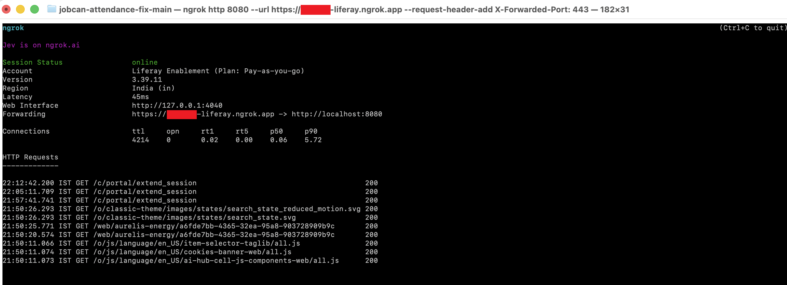
💡 Keep the ngrok inspector open: http://localhost:4040. It's the Web Interface line in the terminal. It lists every request that went through the tunnel, with its method, URL, status, headers and body, and can replay any of them. From Level 7 on, it's the only place where you can see the calls AI Hub makes to your Liferay (Liferay Search RAG, HTTP Request nodes): they come from the cloud, so they show up neither in your browser's DevTools nor as anything recognizable in the Liferay log. When a chatbot answer looks wrong, look there first: did AI Hub call DXP at all, which URL did it call, and what status came back?
⚠️ The inspector shows request headers in clear text, including Authorization tokens. Hide them before sharing a screenshot of it.
- Edit
configs/local/portal-ext.properties: replaceweb.server.host=[YOUR HOSTNAME]with that hostname (nohttps://prefix, no trailing slash). The rest of the tunnel config is already prepared in this workspace. - Run
blade server initto download and unpack the Tomcat bundle. It copiesconfigs/common/over the bundle, which installs this workspace'ssetenv.sh/setenv.bat(4 GB heap, Glowroot agent always on) and the Glowroot agent itself inbundles/glowroot/. Check thatbundles/tomcat/bin/setenv.sh(or.bat) contains-Xmx4096mandglowroot.jar. - Start the server yourself, from your own terminal — never ask Claude to run
blade server start/stopor anycatalina/startup/shutdownscript. Runblade server start --tailand wait forSTARTED. - Load the portal through the ngrok URL (not
localhost) to confirm the forwarded-host config works. - Change the admin password immediately (My Account → Password) — the shipped default becomes a real exposure the moment the instance is public.
✅ Verify: load the ngrok URL in a browser yourself — no proxy error, no interstitial page, no trial-expired banner. Then confirm the old default password no longer works. Also open http://localhost:4000/o/glowroot (local only, never through the tunnel): the Glowroot UI should load.
⚠️ A free ngrok tunnel can inject an interactive "visit site" interstitial in front of every request — invisible to a human clicking through, but silently fatal to any unattended API call (including AI Hub's own HTTP Request node later). If a curl call comes back as HTML instead of JSON, suspect the interstitial before suspecting Liferay. A paid ngrok plan avoids it.
⚠️ Never run the start/stop commands yourself as the agent — this is a hard rule (CLAUDE.md), and it also sidesteps antivirus/endpoint-security software that often blocks an agent-spawned process even when you running the same command would be fine.
0.3 — Persist and validate the admin login
🎯 A credential every future session finds on its own, instead of being "handed to Claude" once and forgotten.
🧩 None — workshop logistics.
📋 Steps:
- Create
configs/local/admin.propertiesyourself, outside the chat — two lines,ADMIN_EMAIL=.../ADMIN_PASSWORD=.... - Ask Claude to confirm it's listed in
.gitignore(add it if not), then validate the credential with a real call.
💬 Prompt (turn 1):
Confirm configs/local/admin.properties exists and is listed in .gitignore —
add it there if it isn't. Then read the admin email and password from that
file (never print the password back to me) and validate it works: call
GET /o/headless-admin-user/v1.0/my-user-account with Basic Auth and show me
the 200 response's own name/emailAddress field.
💬 Prompt (turn 2 — patch CLAUDE.md so every future session finds this automatically):
Update CLAUDE.md's 'Establish Context First' section, point 4, to read:
'Authentication. Look first for configs/local/admin.properties
(git-ignored; ADMIN_EMAIL=... / ADMIN_PASSWORD=...), then
LIFERAY_ADMIN_EMAIL/LIFERAY_ADMIN_PASSWORD environment variables. Use them
for Basic Auth without ever printing, logging, or echoing the password into
the conversation or any generated file. If neither exists, ask the user once
for the admin account to use, then — with their explicit confirmation —
write it to configs/local/admin.properties so no future session has to ask
again. Never accept a password typed inline as part of a task description.'
Confirm the edit was saved.
✅ Verify: open a genuinely new Claude session, give it an ordinary task that needs authentication, and don't mention credentials at all. It should find configs/local/admin.properties on its own and authenticate without asking you for anything.
⚠️ Avoid typing the password inline in a prompt or transcript. If a later exercise hits an unexplained 401/403, re-check this exercise's setup first before debugging further.
0.4 — Read the terrain before touching it
🎯 Confirm the actual DXP version, port, and auth method — never assume.
📋 Prompt:
Read CLAUDE.md's 'Establish Context First' section, then walk me through this
workspace: find the workspace root, read the DXP version from
gradle.properties, check whether bundles/ exists and what port Tomcat is on,
and tell me what authentication method is available. Don't touch anything yet.
✅ Verify: open gradle.properties and bundles/tomcat*/conf/server.xml yourself and independently confirm the four facts reported. Several documented quirks in this workspace change from one quarterly release to the next — spot-check every time.
0.5 — Map the existing site initializer
🎯 A list of what's already in source (fragments, pages, master page assignment) before you add anything to it. Nothing is deployed yet — that's Exercise 1.3.
📋 Prompt:
Walk the site-initializer/ tree under client-extensions/ and list every
fragment (directory name = fragment key), every page under layouts/, and
which master page is assigned to the home page. This is a read of the source
tree only — nothing has been deployed yet. Don't create, modify, or deploy
anything, this is reconnaissance only.
✅ Verify: cross-check against ls client-extensions/*/site-initializer/fragments/group/*/fragments/ and the layouts/ folder yourself.
Note — from here on, work in short Claude Code sessions. Start a new session (or type /clear) whenever you move on to an exercise that doesn't build directly on the previous one. This resets the context: everything the conversation has accumulated is no longer resent with every request, so token consumption stays low and the agent stays focused on the task at hand. Nothing is lost, because a fresh session picks up the project from solution-context.md and solution-index.yaml (Exercise 0.1). Keep one session across exercises only when they are tightly linked, for example a build exercise and the fix that follows it.
Level 1 — Foundations (MCP Server)
1.1 — Enable and query the MCP server
🎯 Confirm Claude can "see" the live object schema through MCP instead of guessing it.
🧩 mcp-server
💬 Prompt:
Check whether feature flag LPD-63311 (the Liferay MCP server) is enabled on
this instance. If not, enable it using the feature-flags skill. Then connect
over MCP, run tools/list, and use the tools it actually returns to list every
object definition currently in this workspace. Don't assume tool names: on
this release the server exposes a discovery chain (tool sets, then a set's
operations, then an operation's schema, then invoke), not a single
call-http-endpoint tool. Show me which tools you called, in order.
📸 Screenshot: the MCP tool call and its JSON response listing object definitions.
✅ Verify: call GET /o/object-admin/v1.0/object-definitions directly and confirm it matches what MCP reported.
1.2 — Enable the flags this path needs
🎯 LPD-74328 (live page composition), LPS-164563 (Data Set admin), LPD-17564 + LPD-52006 (per-entry permissions) — all enabled before you need them.
🧩 feature-flags
💬 Prompt:
Audit whether these feature flags are enabled: LPD-74328 (live page
composition), LPS-164563 (Data Set admin), and LPD-17564 plus LPD-52006
(per-entry permissions). Report the current state of each, then enable
whichever are off.
📸 Screenshot: Control Panel → Instance Settings → Feature Flags, showing the toggles now enabled.
✅ Verify: open the Feature Flags panel yourself and confirm each toggle's live state.
1.3 — First deploy/verify cycle
🎯 Deploy the site initializer for the first time, confirm success from runtime state — not the exit code.
🧩 deploy-and-verify
💬 Prompt:
Deploy the site-initializer Client Extension for the first time in this
workspace and confirm it actually started — don't just report that the
command exited 0. Tail the log in the background and show me the STARTED
line before calling this done.
✅ Verify: grep STARTED in bundles/tomcat*/logs/catalina.out (or bundles/logs/liferay.<date>.log) yourself. This becomes your personal "what I check after every deployment" checklist for the rest of the path.
1.4 — Make Aurelis the portal home and name your instance
🎯 Now that the site initializer has created the Aurelis Energy site, point the portal's home at it and give your Liferay instance a name nobody else in the class is using.
📋 Steps (manual, in the browser, no agent):
- Open Control Panel → Instance Settings → Instance Configuration → General (Virtual Instance Scope).
-
Name: replace the default with something unique to you, for example
Liferay <YOUR LASTNAME>. - Why this matters: the Liferay Data Platform environment used in this course is shared by every participant. Your instance shows up there under this name. If everyone keeps the default name, you won't be able to tell which data is yours in the Level 4 (and later) Data Platform exercises. -
Navigation: set all three fields to the Aurelis site's URL,
/web/aurelis-energy: - Home URL - Default Landing Page (where users land after signing in) - Default Logout Page (where users land after signing out) -
Leave Mail Domain and Virtual Host as they are. The Virtual Host must stay set to your own tunnel hostname from Exercise 0.2.
- Click Save.
📸 Screenshot: the Instance Configuration → General screen with your unique name and the three navigation fields set.
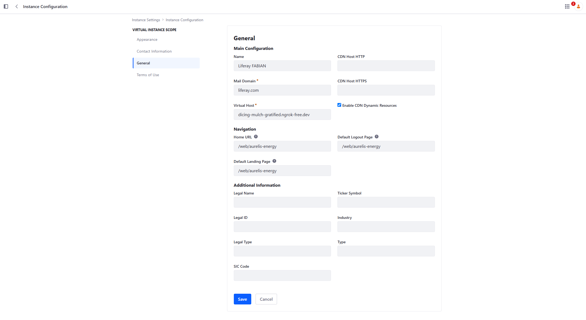
✅ Verify:
- Open your tunnel's root URL (
https://<your-tunnel-host>/) in a private window. You should land on the Aurelis Energy home page, not the default Liferay welcome page. - Sign in, then sign out. You should land back on the Aurelis site both times.
- If
/web/aurelis-energyreturns 404, check the site's real friendly URL under Site Settings → Site Configuration and use that value instead.
Level 2 — Business data modeling (Liferay Objects)
The Brief asks Lot 1 to build and maintain a Target Account Intelligence Database, not replicate one from an external system — so this level extends Liferay's native Account System Object and treats it as the system of record from the start.
📖 The account scoring story — read this before Level 2
The business question. Aurelis' sales team can't chase every company. The Brief asks the platform to tell them where to focus. It does that by answering three questions about each target account:
- Fit — is this the kind of company we want? Industry, number of sites, energy needs. Stored as
fitScore, an integer from 0 to 100.- Value — how much could this account be worth? The Brief calls it "Opportunity Potential" and expresses it in euros (€8–12M for Novacorp). Here it's normalized to
valueScore, an integer from 0 to 100, so it can be combined with Fit.- Intent — are they showing signs of buying right now? Pages visited, white papers downloaded, forms submitted, chatbot conversations. In the score, Intent is measured by
numberOfLeads: how many Leads (form submissions) are linked to the account.The three combine into one number, the Aurelis Opportunity Score (
combinedOpportunityScore), used to rank accounts:
combinedOpportunityScore = min(100, round(fitScore × valueScore / 100 × (1 + min(numberOfLeads, 5) / 10)))Fit × Value gives the account's base potential. Each Lead adds a 10% intent bonus, capped at +50%. The score itself is capped at 100, like Fit and Value: a strong account with many Leads stops at 100 instead of overflowing the scale. It's a bonus rather than a third multiplier because an account with no Lead yet is still worth pursuing; it just isn't showing intent yet.
The running example. Novacorp (42 logistics sites, an electrifying fleet, little storage today) has Fit 92 and Value 90, so with no Lead yet its score is 83, the highest in the dataset. That's why Level 8 opens Novacorp's Digital Sales Room. Even the maximum intent bonus can't push another account past it (Solstice tops out at 82).
Where each piece lives, and when you build it:
Piece Stored in Filled by Exercise Classification: sector,size,priorityTierAccount(native, extended)Staff 2.1, edited in 4.4 fitScore,valueScoreAccountIntelligenceProfileStaff (entered by hand; in real life, Aurelis' own scoring models) 2.2, loaded in 2.3 numberOfLeads(Intent in the score)Account(Aggregation field: counts linked Leads)The platform, as Leads get linked to accounts 2.2, Leads from 4.1, linked automatically in 6.2 combinedOpportunityScoreAccountIntelligenceProfileLoaded with the dataset first, then computed automatically 2.3, automated in 6.2 Richer intent signals Liferay Data Platform events, chatbot signals The platform, as visitors interact 4.1, 9.1, 9.2 Ranked view of accounts Account Intelligence page The platform 4.3 Why a separate
AccountIntelligenceProfileobject instead of more fields onAccount?Account's own API can't sort on custom fields, andAccountsupports neither a Display Page Template nor a Form Container. A plain custom object linked toAccounthas none of these limits, so the ranked page in 4.3 can sort by score.What this course simplifies. Intent in the score is just a Lead count, with no notion of recency. The richer signals (Liferay Data Platform events in Level 4, chatbot signals in Level 9) are captured but don't feed the score. The Brief's "Solution Affinity" indicator (which Aurelis products fit the account) isn't modeled.
2.1 — Extend the native Account System Object
🎯 Add sector (Picklist), size, and priorityTier (Picklist) to Account.
🧩 manage-objects
📎 REQ-22 — build and maintain a proprietary Target Account Intelligence Database.
💬 Prompt:
Using manage-objects, extend the native Account System Object with a sector
field (Picklist), a size field (Integer, number of employees), and a
priorityTier field (Picklist). This is a System Object extension, not a new
Custom Object — confirm the mechanics differ before publishing.
Use exactly these picklist entry keys (they must match the dataset loaded
later):
- sector: logistics, manufacturing, foodDistribution, retail, hospitality
- priorityTier: strategic, key, standard
📸 Screenshot: the Account object definition's field list, showing the three new custom fields alongside the built-in ones.
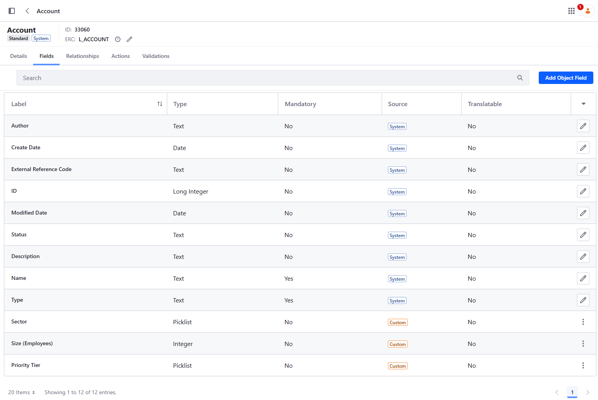
✅ Verify: GET /o/object-admin/v1.0/object-definitions?filter=name eq 'Account' shows the three fields; GET /o/headless-admin-user/v1.0/accounts on a real entry returns them populated.
2.2 — AccountIntelligenceProfile and Lead
🎯 A scoring object linked to Account, holding Fit, Value and the combined Opportunity Score. And a Lead object linked many-to-one to Account, the first intent signal.
🧩 manage-objects
📎 REQ-24, REQ-27 — Strategic Fit Score, Opportunity Potential, and the combined Opportunity Score (see "The account scoring story" above).
💬 Prompt:
Create an AccountIntelligenceProfile object with three Integer fields:
fitScore (0-100), valueScore (0-100) and combinedOpportunityScore (0-100).
Add a validation that rejects fitScore or valueScore outside 0-100. Relate it
to the native Account object as a oneToMany relationship from Account
(oneToOne is rejected server-side on this release — enforce
single-profile-per-account as a business rule, not a schema constraint).
Create a new Lead object with the fields a qualified lead would carry,
including a company Text field and a qualificationStatus picklist
(unqualified, qualified), and add a many-to-one relationship from Lead to
Account. Finally, add an Aggregation field numberOfLeads on Account that
counts its related Leads.
Access expectations: grant Guest nothing on either object in this exercise.
Leads will later come from anonymous form submissions, and
they will then get Guest ADD_OBJECT_ENTRY only, never VIEW: Leads hold names
and emails. AccountIntelligenceProfile is internal sales data and must never
be readable anonymously.
⚠️ numberOfLeads comes back from the Account API as a string ("numberOfLeads": "1"), not a number, and you can't sort or filter on it. That's fine: it's only an input to the score, never a ranking key itself. Anything reading it must convert it first (parseInt).
📸 Screenshot: the Lead and Account Intelligence object definitions have been created, with a one to many relationship with Account.
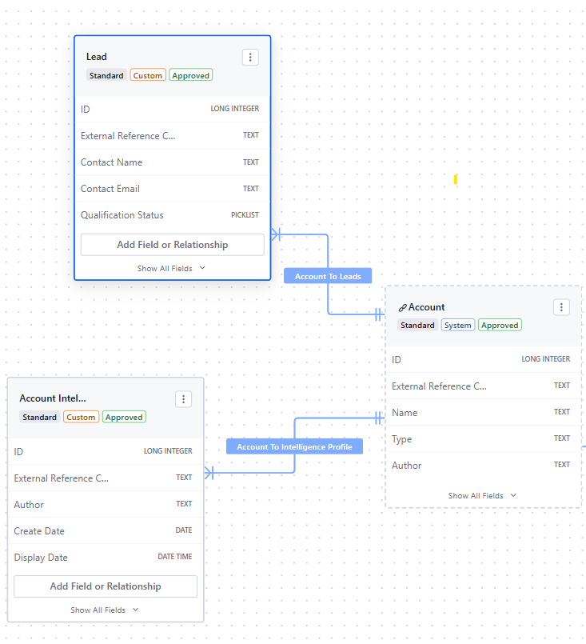
✅ Verify: in Control Panel → Objects, confirm both definitions are published, AccountIntelligenceProfile has the three Integer fields and the 0–100 validation, both relationships to Account exist, and Account now has the numberOfLeads Aggregation field. You'll put real data in them in the next exercise.
2.3 — Load the target account dataset
🎯 Six real-looking target accounts, each with its classification and its scoring profile, so every later exercise (the ranked page in 4.3, the score automation in 6.2, the Digital Sales Room in 8.1) works on the same data for everyone.
🧩 manage-objects (entry creation through the Headless APIs)
📎 REQ-22 — the Target Account Intelligence Database, populated.
The dataset ships in context-source/target-accounts.csv:
| accountName | sector | size | priorityTier | fitScore | valueScore | combinedOpportunityScore |
|---|---|---|---|---|---|---|
| Novacorp | logistics | 8500 | strategic | 92 | 90 | 83 |
| Solstice Manufacturing | manufacturing | 2400 | key | 78 | 70 | 55 |
| Alderbrook Manufacturing | manufacturing | 3200 | key | 85 | 60 | 51 |
| Norrland Foods | foodDistribution | 1900 | key | 80 | 55 | 44 |
| Helix Retail Group | retail | 12000 | standard | 55 | 75 | 41 |
| Brightwater Hospitality | hospitality | 600 | standard | 40 | 30 | 12 |
How to read it: combinedOpportunityScore is already filled in, using the formula from "The account scoring story" with no Lead yet (so it's simply round(fitScore × valueScore / 100)). For now these values are just data; Exercise 6.2 makes the platform compute them, including the intent bonus. Notice Helix Retail Group: it's a large company (high Value) that fits Aurelis poorly (low Fit), so it ranks below smaller but better-fitting accounts. That's the point of combining both dimensions.
💬 Prompt:
Load context-source/target-accounts.csv into the platform. For each row,
create (or update, if it already exists) an Account with that name, sector,
size and priorityTier, and exactly one AccountIntelligenceProfile linked to
it, carrying fitScore, valueScore and combinedOpportunityScore as given — do
not recompute them. Give every Account and profile a readable external
reference code derived from the account name (e.g. novacorp,
novacorp-profile) so re-running this is idempotent. Don't create any Lead:
every account must start with numberOfLeads = 0.
✅ Verify:
GET /o/headless-admin-user/v1.0/accountsreturns the six accounts, withsector,sizeandpriorityTierpopulated.GET /o/c/accountintelligenceprofilesreturns exactly six profiles, one per account, with the scores from the table.- Each account returns
"numberOfLeads": "0".
2.4 — Notify on a qualified lead
🎯 An Object Action that sends an in-app Liferay notification (the notifications bell, not an email) when a Lead is created and qualified.
🧩 manage-object-logic
📎 REQ-43 — hand the salesperson qualification context once a meeting/lead is created.
💬 Prompt:
Add an Object Action on Lead, triggered onAfterAdd, that notifies the
salesperson when an entry is created. Use an in-app Liferay notification
(a User Notification template, delivered to the notifications bell) — not
an email. Send it to my own admin account, standing in for the salesperson,
and include the lead's contact name and qualification status in the message.
Leave the condition expression empty at first so I can see it fire on every
write, then help me tighten it to only fire when qualificationStatus is
qualified.
📸 Screenshot: a Lead Object Action and a Notification template have been created.
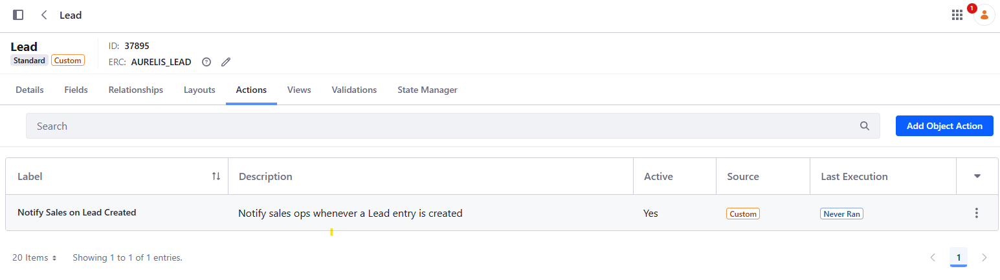
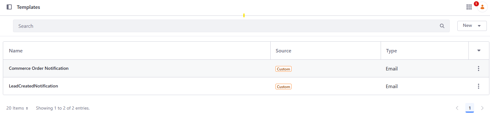
✅ Verify: create a Lead with qualificationStatus unqualified (no notification), then one qualified (a new notification appears under the bell icon in the top bar, with fields correctly interpolated — not literal [%TOKEN%] text).
The simplest way to create them is to ask Claude:
Create two test Leads through the Lead API, both linked to the Brightwater
Hospitality account loaded earlier, with a made-up contact name and
company: the first with qualificationStatus unqualified, the second with
qualificationStatus qualified. Show me the response of each call.
📖 Linking them to Brightwater Hospitality, the lowest-scoring account, means no account has to be created by hand, and the two Leads can't change the ranking later: once Exercise 6.2 adds the intent bonus, its score only rises from 12 to 14.
Level 3 — Editorial content (CMS, CMP)
3.1 — Four CMS Spaces, four Content Structures
🎯 One Space + Content Structure per audience: Product Content, Customer Documentation, Partner Portal, White Papers — every document already sitting in context-source/ imported as a real entry.
🧩 manage-cms 🆕
📎 REQ-08–REQ-11 (CMS, reusable structures, rich editing, DAM), REQ-14 (translation).
📋 Source folders — confirm actual file counts before importing, don't assume the numbers below:
context-source/products/(~5 files) → Product Contentcontext-source/customer-documentation/(~10 files) → Customer Documentationcontext-source/partner-documentation/(~10 files) → Partner Portal (name it exactly this — Exercise 7.1 references it by this name)context-source/white-papers/(3 files, Novacorp/Alderbrook/Norrland) → White Papers
💬 Prompt:
Using manage-cms, read every file under context-source/products/,
context-source/customer-documentation/, context-source/partner-documentation/,
and context-source/white-papers/. For each of the four folders, design one
Content Structure whose fields actually fit that folder's content, create a
Space named appropriately for its audience (name the partner one 'Partner
Portal'), connect each Space to [site], and import every document in that
folder as a real entry using its own content. Don't skip any document, and
don't force all four folders into one shared structure.
Add a documentType Picklist on the Customer/Partner Documentation structures
to capture sub-genre (user guide, release notes, SLA handbook, certification,
technical manual, etc.) instead of splitting into a structure per sub-genre.
Model minimumPartnerTier and any account-scoping-looking field as plain data
only — no Role, permission grant, or scoping mechanism yet. That comes
later.
Access expectations: don't open anything to Guest in this exercise. Later
exercises open exactly what must be public: the White Papers entries and
the Product Content entries. Customer Documentation and Partner
Portal must never become readable anonymously. If the import leaves Guest
VIEW on any entry or folder, tell me rather than leaving it silently.
⚠️ Don't build a page or Collection Display in this exercise — that's Level 4's job. Building a throwaway page here would duplicate that step for no benefit.
📸 Screenshot: 4 CMS spaces have been created, alongside content structures and contents.
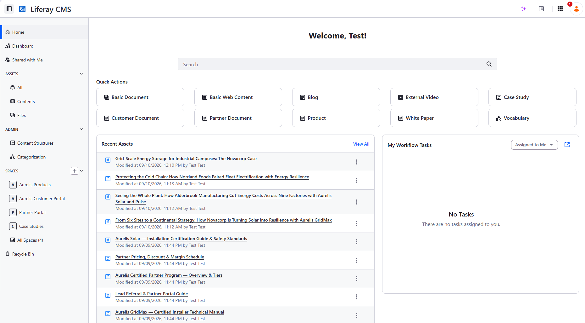
✅ Verify: for all four Spaces, GET .../asset-libraries/{spaceERC}/connected-sites lists the target site; GET /o/c/<pluralLabel>/scopes/{spaceScopeId} returns the expected entry count, all status: approved.
⚠️ The names of the CMS spaces, content structures might be different from the screenshot. We've assumed in this exercise that the AI Agent will infer the structures from the contents included in this workspace. As a consequence, there is some element of randomness here which is totally expected. Peek at your neighbour's screen if someone is sitting next to you and compare.
💡 Why this exercise: the source documents are structured content that only exists in rendered form. The template is there, the underlying data model is not. That is the situation of a migration from an existing website whose source data you don't have. The point is to show that an LLM can read that rendered content, infer the structure behind it, and restructure the content so it can be loaded into a target system such as Liferay CMS. The prompt above deliberately leaves the structure to the agent. In a real project you can be much more directive: describe the target structure exhaustively, or insist only on the specific fields you need to isolate, for example to filter or triage the content later.
3.2 — Tour the CMS admin GUI
🎯 Walk the content lifecycle a real author uses day to day: draft, publish, version history, scheduled publication, localization, and Basic Documents. Deliberately GUI-only — no skill, no API.
📎 REQ-08–REQ-21 as a set (governance, translation).
📋 Steps:
- Open the CMS. Global Menu → CMS → Contents.
- Identify the CMS Space which contains the products.
- Edit one product, Aurelis GridMax for instance.
- Back in the list of products, use the contextual menu against that edited product and select *View history".
- Restore the previous version (the previous version is restored as yet another version of the content).
- Now edit one of the products again, and in the right menu, check the *Schedule section": it lets you determine when you'd like to make that content visible and/or expire.
- Go back to the list of products, now use the translate contextual menu. Liferay CMS provides a GUI to facilitate content translation. Don't worry if you cannot translate any content in another language, you'll soon be able to ask AI Hub for help!
✅ Verify: one entry with ≥2 published versions and a demonstrated rollback; one entry with a scheduled future publish date; the product sheet with a second locale populated and switchable.
3.3 — CKEditor5's native AI actions
🎯 Use AI Hub's native CKEditor5 AI menu to summarize, rewrite for audience, and produce a tone variant — no plugin, no custom code.
🧩 manage-ai-hub 🆕 for the AI Hub connection (prerequisite below); the editing itself is manual.
📎 REQ-33 — AI-generated drafts, titles/summaries, audience adaptation, rewriting, campaign variations.
📋 Prerequisite — connect AI Hub (first time in this path):
- Control Panel → Instance Settings → Feature Flags → Release → enable AI Hub (LPD-62272).
- In AI Hub: Configurations → set Environment URLs to the ngrok URL from Exercise 0.2 (not
localhost) → Save → copy the generated Client ID / Client Secret. - Back in DXP: Control Panel → Instance Settings → AI Hub → paste Client ID/Secret, set Service URL to
https://ai.hub.liferay.com→ Save.
📸 Screenshot: the AI Hub Configurations screen and the DXP AI Hub connection screen, both showing a saved connection.
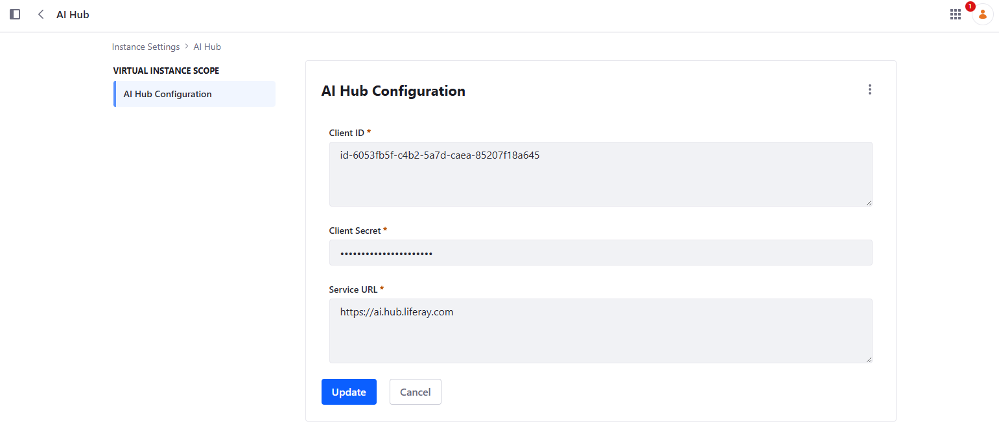
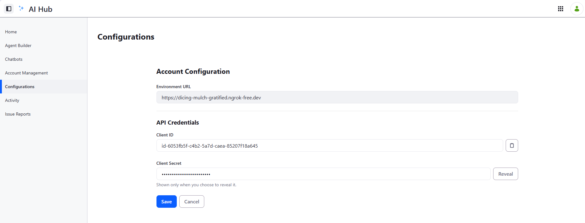
✅ Verify: In order to make sure it works fine, just try to say Hi! to the chatbot which is now available in the CMS.
📋 In the CMS, select one of the product entries from 3.1, select a paragraph and use CKEditor5's AI menu:
- Generate a summary of the rich body.
- Rewrite a paragraph for a non-technical audience (e.g. a homeowner instead of a facilities engineer).
- Produce a regional/tone variant of a paragraph (not a language translation — a phrasing adaptation).
3.4 — Stand up a CMP campaign for white paper production
🎯 Two new users (Elena Ruiz, Marcus Chen) each scoped to the Partner Portal/White Papers CMS Space, and a CMP campaign ("New White Papers") with one task per author, due-dated.
🧩 manage-cmp-campaigns 🆕 for the campaign; users/roles via MCP/REST directly.
📎 Content governance at scale — a white paper's assignment/due-date lifecycle is separate from its CMS draft/publish workflow.
📋 Prerequisite — activate CMP (licensed add-on):
- Download the CMP
.lpkgand create an activation key in the Liferay marketplace. - Deploy the Activation key
- Deploy the
.lpkg
You should see this:
2026-09-15 12:13:26.406 INFO [com.liferay.portal.kernel.deploy.auto.AutoDeployScanner][AutoDeployDir:274] Processing activation-key-content-marketing-platform-1-desktop-mj58ha2.xml
2026-09-15 12:13:32.391 INFO [fileinstall-directory-watcher][b:-1] Content Marketing Platform license validation passed
2026-09-15 12:13:32.392 INFO [fileinstall-directory-watcher][b:-1] License registered for Content Marketing Platform
2026-09-15 12:14:11.547 INFO [com.liferay.portal.kernel.deploy.auto.AutoDeployScanner][AutoDeployDir:274] Processing Liferay Content Marketing Platform.lpkg
2026-09-15 12:14:21.131 INFO [Start Level: Equinox Container: d5e96260-3dbf-4406-800d-a05f76184048][BundleStartStopLogger:66] STARTED com.liferay.headless.cmp.api_2.2.0 [1560]
2026-09-15 12:14:21.135 INFO [Start Level: Equinox Container: d5e96260-3dbf-4406-800d-a05f76184048][BundleStartStopLogger:66] STARTED Liferay Content Marketing Platform - API_26.3.0 [1559]
2026-09-15 12:14:21.312 INFO [fileinstall-directory-watcher][BundleStartStopLogger:66] STARTED com.liferay.site.initializer.cmp_1.0.10 [1565]
2026-09-15 12:14:21.330 INFO [fileinstall-directory-watcher][BundleStartStopLogger:66] STARTED com.liferay.site.cmp.site.initializer_1.0.12 [1564]
2026-09-15 12:14:21.749 INFO [fileinstall-directory-watcher][BundleStartStopLogger:66] STARTED com.liferay.headless.cmp.impl_1.0.8 [1563]
2026-09-15 12:14:22.017 INFO [Start Level: Equinox Container: d5e96260-3dbf-4406-800d-a05f76184048][BundleStartStopLogger:66] STARTED Liferay Content Marketing Platform - Impl_26.3.0 [1561]
2026-09-15 12:14:22.169 INFO [fileinstall-directory-watcher][BundleStartStopLogger:66] STARTED com.liferay.headless.cmp.client_1.0.6 [1562]
If everything's fine, go to Control Panel → Instance Settings → Feature Flags and enable the CMP (LPD-58677).
⚠️ Don't enable the CMP Feature Flag if it didn't properly activate.
💬 Prompt:
Using the Liferay MCP server (or the REST API directly if MCP isn't
available), set up a campaign for a new white paper production effort in
CMP, using the manage-cmp-campaigns skill.
First, create two new users: Elena Ruiz (elena.ruiz@aurelis.com), who will
author the ACME Corp white paper, and Marcus Chen (marcus.chen@aurelis.com),
who will author the RayLife Ltd white paper. Both users must be active and
able to sign in. Make each a member of the White Papers Space with a role
that lets them add and edit white paper entries there, but not delete or
publish them, and grants nothing in the other Spaces or in the Control
Panel. Each must be able to see their own CMP task. Before calling it done,
list exactly what the role grants.
Then create a CMP campaign ('New White Papers') for two white papers: one
for ACME Corp, one for RayLife Ltd. Add one task per white paper, each
assigned to the corresponding author, with a due date.
📸 Screenshot: the CMP campaign board showing both tasks, assignee and due date visible.
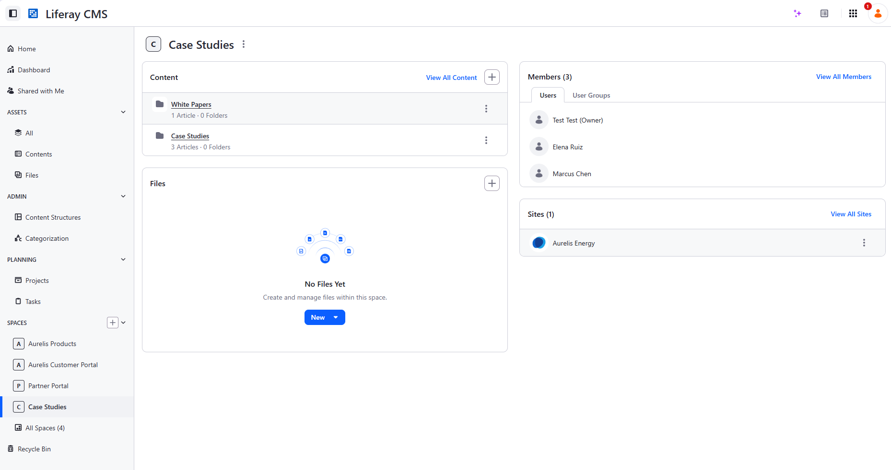
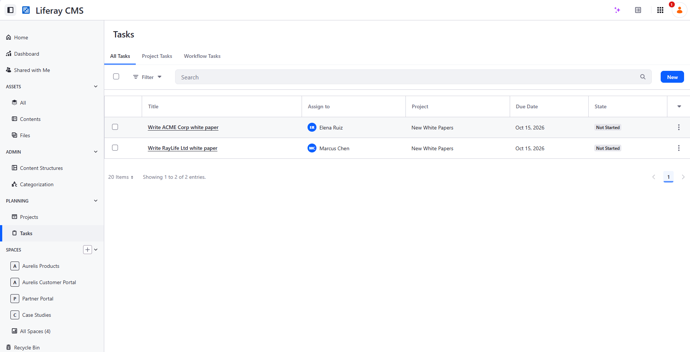
✅ Verify: GET each user's account and confirm the granted role's permissions match what was requested, nothing broader. Open the campaign and confirm both tasks show the right assignee and due date.
Idea: How about creating AI Personas to interact with the CMS using the Liferay MCP server, using the CMP and its APIs to coordinate their work?
Level 4 — Page composition & account management (Page Builder, Data Sets, LDP)
4.1 — Gated white paper funnel
🎯 Listing page → gated entry (lead-capture form) → redirect on submit → full write-up → tracked event in Liferay Data Platform.
🧩 manage-form-containers 🆕, manage-pages, scaffold-fragment, manage-analytics 🆕
📎 The standard gated-content pattern; REQ-25 (behavioral-signal capture) via a MutationObserver → Analytics.track() wrapper.
📋 Prerequisite — connect Liferay Data Platform (Analytics Cloud):
- In LDP, add this instance as a new Data Source.
- Copy the generated token.
- In Liferay DXP, Control Panel → Instance Settings → Analytics Cloud → paste the token → Save.
- In LDP, select the Aurelis site so it's tracked.
- Rename your Liferay data source in LDP so that it bears a non generic name.
⚠️ This workspace is shared across every participant in this session. If everyone's Analytics.track() call fires the same bare event name, Exercise 4.2's report becomes an unreadable mix of everyone's downloads. The prompt below has the agent ask you for your own three-letter initials first and suffix the event name with them — don't skip that step, and remember your own suffixed name for Exercise 4.2. Pick three letters that identify you: first letter of your first name + first two letters of your last name (Fabian Bouché → FBO), or one letter per name if you go by three names (Andrew Lloyd Webber → ALW). Any other three letters work too, as long as they are recognizably yours.
💬 Prompt:
Using manage-pages, manage-form-containers and manage-analytics, build the Novacorp
white paper's full funnel, bound to the WhitePaper Content Structure, entirely
through the site-initializer tree.
Before doing anything else, ask me for my three-letter initials and use them
to suffix every custom event name below (e.g. whitePaperDownloaded_ABC for
initials ABC) — this workspace is shared across every participant, so a
bare, unsuffixed event name would collide with everyone else's.
- A "White Papers" listing page with one card per white paper, each linking
into its own entry.
- That entry's default page: a short teaser plus a lead-capture form (name,
email, company, role) writing into the existing Lead object, tagged with
source = 'whitepaper-novacorp'.
- A second, non-default page for the same entry: the full write-up.
- Once the form is submitted, take the visitor straight to that full write-up
page and record the visit as a tracked event, fired with a real
`Analytics.track()` call from the page, using my initials-suffixed event
name — not just a reachable page. The Liferay Analytics Cloud SDK is
already loaded site-wide once the prerequisite below is connected; don't
invent a separate tracking mechanism or fire the event from anywhere other
than the visitor's own browser session.
- Access expectations. Guest must be able to browse the listing, read an
entry, and submit the form; nothing beyond that should be readable or
writable anonymously. Concretely:
- Guest gets VIEW on the WhitePaper entries and on the folders that hold
them (folders carry their own permissions), plus DOWNLOAD_FILE if an
entry renders a file or image.
- Guest gets ADD_OBJECT_ENTRY on Lead, and never VIEW: submitted names
and emails must not be readable anonymously.
- The form must not depend on a picklist fetched over REST (Guest can't
read picklists): ship any options in the markup.
- The gate is a user-experience gate, not a security boundary: the
write-up URL stays reachable by Guest. Say so in your summary rather
than presenting it as protected.
Verify every point as an unauthenticated visitor (curl with no
credentials, then a fresh browser context), never with admin credentials,
and show me that an anonymous GET on the Lead collection returns no
entries.
📸 Screenshot: the listing page, the gated (default) entry page with the lead-capture form, the full write-up page, and the tracked event showing up in Liferay Data Platform.
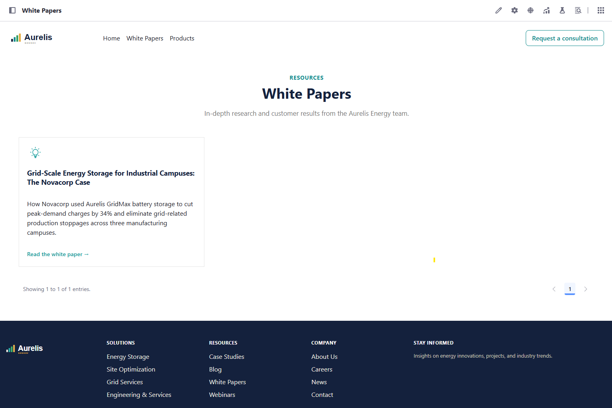
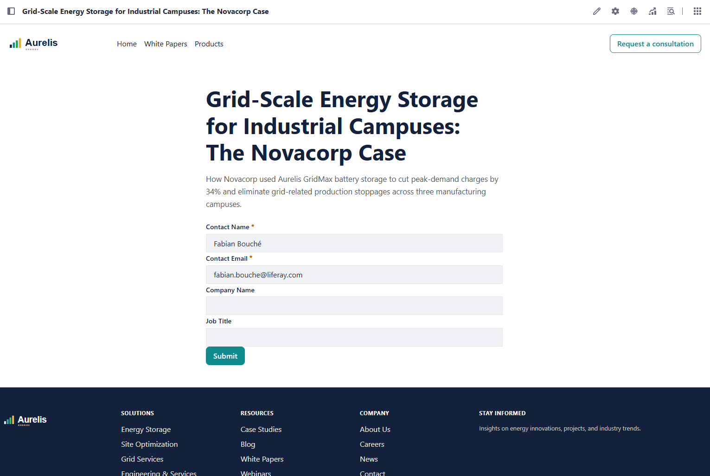
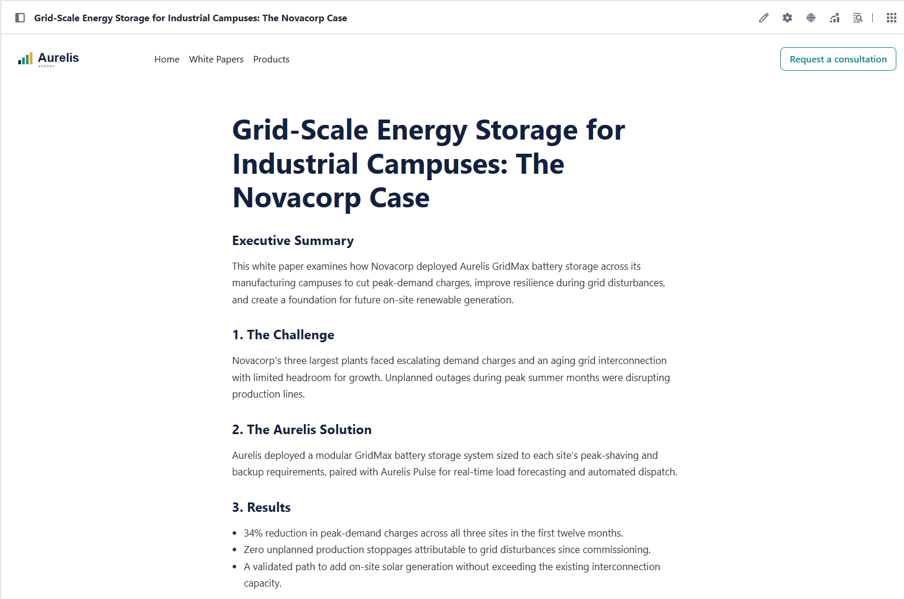
✅ Verify — as a real anonymous visitor, not an admin session: listing → click Novacorp → confirm you land on the gated template → submit the form → confirm a real Lead entry was created with the right source tag → confirm the redirect lands on the full write-up for that same entry → confirm the event actually appears in Liferay Data Platform.
Also open Chrome DevTools → Network tab, enable "Preserve log" (a plain redirect otherwise clears the panel), filter on the Analytics Cloud request domain, and confirm the Analytics.track() call goes out as a real outbound request with the expected event payload. Analytics.track() is store-and-forward — it queues the event to localStorage immediately and the SDK flushes it on its own ~2-second interval, so don't expect the request before the redirect fires; look for it within a couple of seconds of the full write-up page loading. Don't rely on the LDP dashboard alone either way, since a delayed dashboard entry doesn't tell you whether the call ever fired from the browser in the first place.
📸 Screenshot: the custom event, sent to LDP.
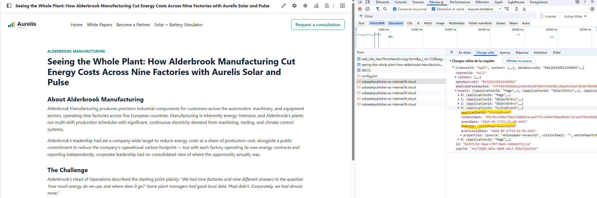
⚠️ The look and feel is likely going to be slightly different than the screenshots' as we haven't provided the agent with any strict guidelines about how to render those pages.
4.2 — Monitor white paper downloads in Liferay Data Platform
🎯 A saved Event Analysis in LDP tracking your own whitePaperDownloaded_<your initials> event, broken down by which white paper was actually downloaded — the "so what" half of Exercise 4.1's tracked event: capturing it only pays off once someone can see it aggregated.
🧩 None to build — pure GUI usage in Liferay Data Platform. manage-analytics 🆕 can help you check the event and the Event Analysis.
📎 REQ-25 (behavioral-signal capture).
⚠️ Analyze your own initials-suffixed event name from Exercise 4.1, not the bare whitePaperDownloaded — this workspace is shared, and every other participant is firing their own suffixed variant at the same time.
📋 Steps (all in LDP — no skill involved):
- Generate at least one real event first — go through the full Exercise 4.1 funnel yourself as a visitor (listing → form → redirect → full write-up) so there's an actual
whitePaperDownloaded_<your initials>event to analyze. An empty report proves nothing about whether tracking is wired correctly. - In LDP: Events → Event Analysis.
- Analyze:
whitePaperDownloaded_<your initials>. Breakdown: addpageTitle(Event) — this is what lets the report distinguish which white paper's full write-up was actually reached, not just a raw total. - Save Analysis, naming it with your initials too (e.g. "White paper download - ABC") — saved analyses are shared across the workspace just like everything else.
📸 Screenshot: the saved Event Analysis configuration.
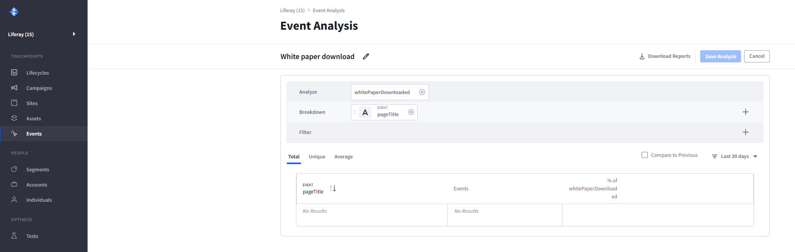
- Set the range to Last 24 hours, confirm the table shows a real
pageTitlerow (not "No Results"), then Download Reports and open the exported Event Analysis Report.
📸 Screenshot: the downloaded Event Analysis Report, showing the real, non-empty breakdown.
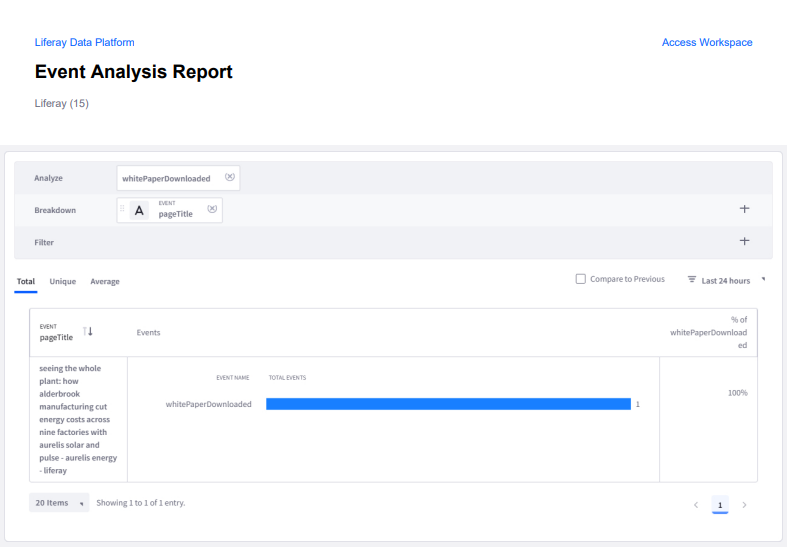
✅ Verify: the report's pageTitle row matches the white paper you actually downloaded, Total Events ≥ 1, and the downloaded report file itself — not just the live LDP screen — reflects the same row.
4.3 — Account Intelligence page with a Data Set
🎯 A page showing AccountIntelligenceProfile entries sorted by combinedOpportunityScore, each row linking into a small React app for the underlying account.
🧩 manage-pages, manage-data-sets 🆕, scaffold-client-extension, react-custom-elements
📎 REQ-27 — prioritize accounts by combined Opportunity Score.
📖 Where the score comes from at this point. The combinedOpportunityScore values you'll sort on are the ones loaded with the dataset in Exercise 2.3. Nothing computes them yet; if you edited fitScore now, the combined score wouldn't change. Exercise 6.2 automates that calculation. Expected order on this page: Novacorp (83), Solstice Manufacturing (55), Alderbrook Manufacturing (51), Norrland Foods (44), Helix Retail Group (41), Brightwater Hospitality (12).
⚠️ Source the Data Set from AccountIntelligenceProfile, not Account — Account's own Headless module only supports sorting on a small hardcoded field set and rejects sort on any custom/related field. Account also supports neither a Display Page Template nor a Form Container, so the row action links to a plain Content Page holding a React app instead.
⚠️ Requires 2026.Q3.6 or later (fix for LPD-102157). The Data Set fragment references its Data Set by external reference code, directly from the site initializer's page-definition.json. On 2026.Q3.2 this needed a hotfix.
💬 Prompt:
Create a Data Set of Account Intelligence Profiles, sorted by combined
Opportunity Score (highest first, and sortable by users), showing each
profile's account name, with a row action that opens /account-detail for
that profile.
Then add an 'Account Intelligence' page to the site initializer with this
Data Set on it. Deploy it and confirm the page renders real rows without
anyone touching the Page Editor.
Separately, build the /account-detail page: a small React customElement
Client Extension that reads profileId from the URL, fetches that
AccountIntelligenceProfile entry, then follows its own relationship field to
fetch the related Account — two Headless calls — and renders both live.
Access expectations: both pages are for Aurelis sales staff only. Create a
Regular Role 'Aurelis Sales' if it doesn't exist, with VIEW on
AccountIntelligenceProfile entries and on Accounts (company-wide), and an
active test user holding only that role (alex.moreau@aurelis.com). Remove
Guest VIEW from both pages in their page.json (an empty actionIds for
Guest), and give the Aurelis Sales role VIEW on them. Verify three ways: as
alex.moreau the page shows the six rows and /account-detail resolves; as
Guest both pages answer 404; as a signed-in user without the role the pages
are not accessible either. Don't verify as admin only.
📸 Screenshot: the live "Account Intelligence" page sorted descending by score, with the Page Editor showing the Data Set already selected on the fragment (nobody selected it by hand).
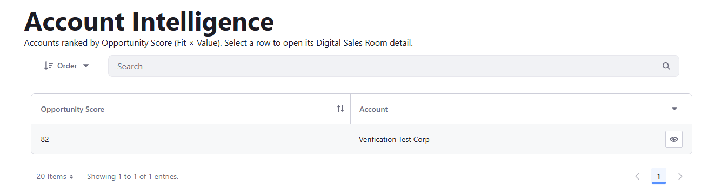
✅ Verify: open layouts/<page>/page-definition.json and confirm the fragment's itemSelector names the Data Set by ERC. In the Page Editor, confirm the fragment shows that Data Set as selected without anyone having picked it. Load the live page, click the score column header, confirm the sort actually re-orders, and confirm the account-name column resolves via the reverse relationship. Trigger a row action and confirm /account-detail resolves both the profile and its related account live.
4.4 — Make the account-detail app editable
🎯 Extend the Exercise 4.3 React app so staff can edit an account's classification fields directly on the same page.
🧩 scaffold-client-extension, react-custom-elements
📎 REQ-22 — this is the actual maintenance mechanism for the Target Account Intelligence Database.
💬 Prompt:
Extend the /account-detail React customElement built earlier so it
can also update the Account it displays. Add editable fields for sector,
size, country, and priorityTier, a Save button that PATCHes the change to
Account's own Headless API (/o/headless-admin-user/v1.0/accounts/{id}), and
re-fetch the entry afterward so the page reflects what was actually
persisted.
Access expectations: being signed in is not enough to edit. Grant the
Aurelis Sales role (created earlier) UPDATE on Accounts, and let the server-side
permission decide: hide the editor for users who can't update, but never
rely on the hidden UI as the protection. Verify as alex.moreau (the save
persists), as a signed-in user without the role (the PATCH is rejected), and
anonymously (401/403, never a silent success).
📸 Screenshot: the account-detail page in edit mode.
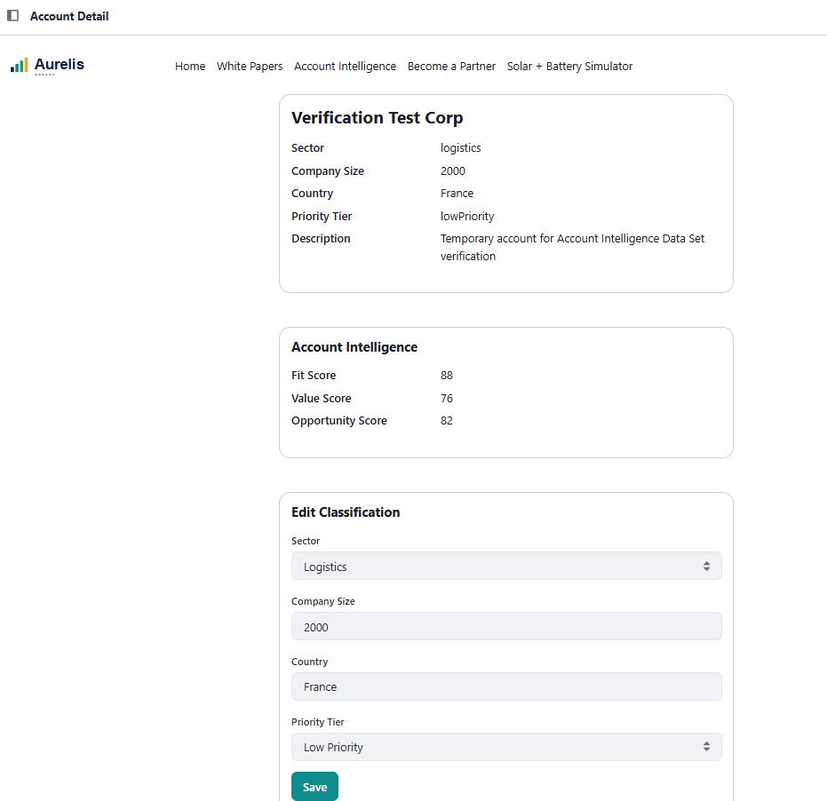
✅ Verify: change a field, save, reload — confirm the new value actually persisted. Confirm an unauthenticated request to the same PATCH returns 401/403, never a silent success.
Level 5 — Visitor interactions (Form Containers, Objects, Integrations)
5.1 — "Become an Aurelis Partner" form with a live company lookup
🎯 A public Form Container creating a PartnerApplication entry, prefilled from France's public company registry.
🧩 manage-form-containers 🆕
📎 REQ-55 — partner registration and application intake.
💬 Prompt:
Build a public Form Container bound to a new PartnerApplication object:
company registration number, company name, country, sector, message. When
the registration number is entered, call France's public company registry
(GET https://recherche-entreprises.api.gouv.fr/search?q=<number>) and
prefill name/sector/country from the match. Keep every prefilled field
editable — nothing submits automatically from the lookup.
Access expectations: the page and the form are public. Guest gets
ADD_OBJECT_ENTRY on PartnerApplication and nothing else: applications
contain company details and must be readable only by the Aurelis Sales role
(created earlier). Without ADD_OBJECT_ENTRY the Form Container renders nothing
for a visitor, with no error. If sector or country is a picklist, ship its
options in the markup: Guest can't read picklists over REST. Verify the
submission as an unauthenticated visitor, and show me that an anonymous GET
on the PartnerApplication collection returns no entries.
📸 Screenshot: the form after a successful lookup, showing prefilled-but-editable fields.
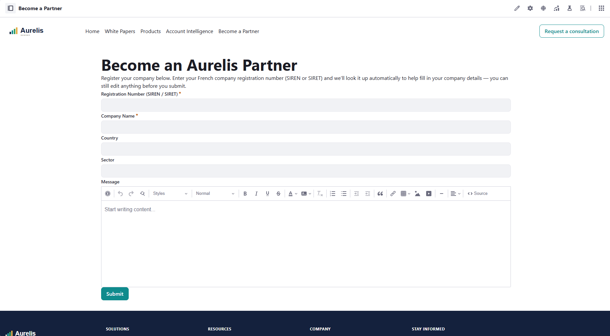
✅ Verify: submit with 789 001 377 (Liferay France's own SIREN) — confirm the lookup fires and prefills name/sector/country. Submit again with a number that returns no match — confirm the form still lets you fill in every field manually. Confirm both create a real PartnerApplication entry, and that a prefilled field is still editable before submit.
⚠️ Scoped to French-registered companies only (SIREN). CORS is confirmed open — no server-side proxy needed. The registry is rate-limited to 7 req/s server-side, fine at typing speed.
Level 6 — Custom development: Client Extensions (Client Extensions, Object Actions, Glowroot)
This is the densest level — the core custom-development volume identified for Aurelis.
6.1 — Solar + Battery Installation Simulator
🎯 Two independent customElement client extensions — inputs widget and results widget — coupled only through Liferay.fire()/Liferay.on().
🧩 scaffold-client-extension (×2, including its "Messaging Between Widgets: Liferay.fire / Liferay.on" section).
📎 REQ-63–REQ-66 — solar/battery sizing from an address, usable surface area, and hourly consumption profile, using real Open-Meteo weather data.
💬 Prompt:
Build the Aurelis Solar + Battery Installation Simulator as specified in the
Brief (section "Solar Panel + Battery Installation Simulator", Lot 1) — two
independent customElement Client Extensions on the same page, coupled only
through Liferay.fire()/Liferay.on(), never a shared DOM reference, module, or
config file.
(1) aurelis-simulator-inputs. Collects exactly three inputs: address
(geocoded via Open-Meteo's geocoding endpoint), usable surface area in m²,
and an hourly consumption profile for a typical day — an editable 24-bar
chart with an adjustable Y-axis scale. On any change, fire
Liferay.fire('aurelisSimulatorInputsChanged', {address, lat, lon, surfaceM2,
hourlyConsumptionKwh: [24 numbers]}) with the full current state.
(2) aurelis-simulator-results. A separate Client Extension subscribing via
Liferay.on('aurelisSimulatorInputsChanged', ...). For a visitor-selected
month (a real 12-month selector):
- Fetch that location's historical solar irradiance for that month from
Open-Meteo's historical archive API.
- Compute hourly solar production from surface area and irradiance.
- Simulate the battery: store daytime surplus, discharge it during hours
without sun. Compute and display a recommended battery capacity (kWh),
labeled as this build's own answer to an open question in the Brief.
- Render a 24-bar stacked chart per hour: solar / battery / grid, always
summing to that hour's consumption. Overlay battery state-of-charge (%) as
a line on the same chart.
- Recompute the whole chart whenever the month changes.
Out of scope, name explicitly in the README rather than deciding silently:
no cost/savings estimate (physical simulation only); no
efficiency/orientation/tilt inputs (name whatever fixed assumption is used as
an explicit constant); no geography restriction beyond Open-Meteo's own
coverage.
Inject each Client Extension's JS/CSS from the fragment's own js field
(document.createElement, appended to document.head, guarded by a data-*
marker) — a fragment's html field silently strips <script>/<link> tags.
Cache each (location, month) fetch; don't refetch on every unrelated redraw.
Access expectations: the simulator page is public. Both widgets must work
for an anonymous visitor: they call only Open-Meteo, never a Liferay API.
Verify it in a fresh, signed-out browser context.
📸 Screenshot: the input widget with a hand-drawn consumption profile, and the results widget's stacked chart for two different selected months.
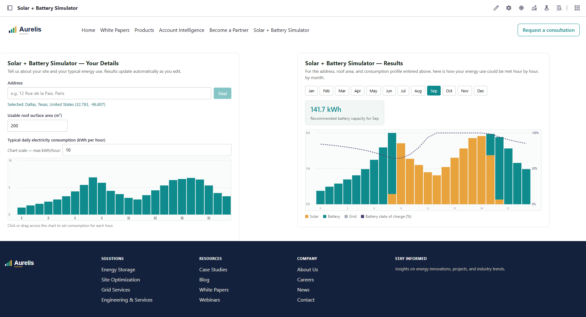
✅ Verify: real address + plausible surface area + drawn profile → confirm the results bars sum correctly at every hour. Switch months, confirm the mix actually changes. Remove the results widget from the page — the inputs widget should still work standalone, proof the coupling is event-based.
💡 Rearranging the layout: the two widgets are stacked one above the other by default, but nothing ties them to that arrangement. Because they only talk through events, you can place them side by side or in any grid you like, inputs on the left and results on the right for example. You can do it in two ways:
- In the page editor: drop a Grid fragment with two modules, then drag one widget into each column. This is quick, but the next run of the site initializer overwrites it, because the page is rebuilt from its
page-definition.json. - In the source tree: ask the agent to change the page's
page-definition.jsonto aSection → Row → Columnlayout, with column sizes adding up to 12, and to stack the columns on mobile. The arrangement then survives every reprovision.
6.2 — Opportunity Score Client Extension
🎯 An objectAction Client Extension that keeps combinedOpportunityScore up to date with Fit, Value and Intent. When a Lead comes in, it also links that Lead to the right Account, so the visitor's interest actually counts towards that account's score.
🧩 scaffold-client-extension (type objectAction), setup-oauth
📎 REQ-26 (match an identified visitor to their organization), REQ-27 — Aurelis' scoring formula is its own business logic; no native Liferay feature computes it.
📖 What changes. Until now combinedOpportunityScore was plain data, loaded in Exercise 2.3 (see the note in 4.3), and the Leads from the white paper form (4.1) only carried the company name as free text, linked to no Account. From here on, one Client Extension handles two triggers:
- A profile is added or updated: it recomputes that profile's score.
- A Lead is added: it looks up the Account whose name matches the Lead's
company, links the Lead to it (which increases that account'snumberOfLeads), then recomputes that account's score.
The formula is the one from "The account scoring story": min(100, round(fitScore × valueScore / 100 × (1 + min(numberOfLeads, 5) / 10))). With no Lead linked yet it gives exactly the dataset values, so the ranking doesn't move until a Lead comes in or someone changes a Fit or Value score.
📖 Why this Client Extension needs two OAuth applications. Until now, a Client Extension called back into Liferay with the token Liferay sent it, which acts as whoever triggered the action. Here, a Lead is usually created by an anonymous visitor submitting the white paper form, so that token belongs to Guest, and Guest can't read Accounts or edit the Lead (every call returns 403). The Client Extension therefore gets its own identity:
| OAuth application | Type | Used for |
|---|---|---|
User agent (already required by every objectAction) |
oAuthApplicationUserAgent |
Lets Liferay call the microservice and identify the triggering user |
| Headless server | oAuthApplicationHeadlessServer |
The microservice's own service account, used with client_credentials for every call back into Liferay |
The headless-server service account is an Administrator: its scope list is the only thing limiting what it can do, so keep it as narrow as possible.
⚠️ The microservice never holds its credentials in source code or config. On deploy, DXP writes the headless server's client ID and secret as files under bundles/routes/default/<project-name>/ (on Liferay Cloud, under /etc/liferay/lxc/ext-init-metadata). Every redeploy changes both, and tokens issued before it then get 401. So the microservice reads those files each time it requests a token, and on a 401 re-reads them and retries once.
💬 Prompt:
Scaffold an objectAction Client Extension (a Node microservice) that keeps
AccountIntelligenceProfile.combinedOpportunityScore up to date:
combinedOpportunityScore =
min(100, round(fitScore * valueScore / 100 * (1 + min(numberOfLeads, 5) / 10)))
where numberOfLeads is the Aggregation field on the profile's Account (it
comes back as a string: parse it).
Attach the same Client Extension to three object actions and tell the
callers apart by objectDefinitionId:
- AccountIntelligenceProfile, onAfterAdd and onAfterUpdate: recompute that
profile's score.
- Lead, onAfterAdd: find the Account whose name exactly matches the Lead's
company (case-insensitive; escape single quotes in the filter). If there's
no match, do nothing. Otherwise link the Lead to that Account, then
recompute that Account's profile score.
Only PATCH a score when the value actually changes, so the write-back
doesn't re-trigger the action in a loop.
Leads are created by anonymous visitors, so don't call back into Liferay
with the inbound token. With setup-oauth, add an
oAuthApplicationHeadlessServer and use client_credentials for every call
back, with only these scopes: c_accountintelligenceprofile.everything,
c_lead.everything, Liferay.Headless.Admin.User.everything.read. Keep the
oAuthApplicationUserAgent the objectAction entry requires.
Read the headless server's client ID and secret from the routes files DXP
writes on deploy, each time a token is requested (never cached at startup,
never copied into the project), and on a 401 re-read them and retry once.
✅ Verify:
- Fit/Value change: set Helix Retail Group's
fitScorefrom 55 to 95 and confirm itscombinedOpportunityScorebecomes 71 (95 × 75 / 100, no Lead). On the Account Intelligence page, Helix now ranks second, right after Novacorp. Set it back to 55 and confirm the score returns to 41. - Intent: in a private window (anonymous), submit the white paper form from Exercise 4.1 with
Norrland Foodsas the company. Confirm the new Lead is linked to the Norrland Foods Account, the Account returns"numberOfLeads": "1", and Norrland's score goes from 44 to 48. Submit a second time: the score reaches 53 and Norrland now ranks above Alderbrook Manufacturing (51). Submit once more with a company that matches no Account and confirm that Lead stays unlinked and no score changes. - Why the headless server is needed: temporarily make the microservice use the inbound token instead, resubmit the form anonymously, and confirm the callbacks fail with
403. Then switch back. - Scopes: give the headless server only
Liferay.Headless.Object.everythingand confirm every callback fails with403. Restore the three scopes above and confirm it works again. - Credential rotation: redeploy the Client Extension without restarting the microservice, submit another Lead, and confirm it still works (the microservice re-read the new credentials after a
401).
6.3 — Measure what a Lead submission costs, with Glowroot
🎯 Answer one question with measurements, not by reading code: when an anonymous visitor submits the white paper form, does the visitor wait for the Opportunity Score Client Extension (6.2) before getting the next page? And how many calls does a single Lead trigger in total?
🧩 glowroot-performance 🆕
📎 NFR — performance of public journeys; checks the 6.2 design (loop guard, triggers) with numbers.
📖 What happens when a Lead comes in. One form submission sets off a chain:
- Liferay saves the Lead.
- The
onAfterAddObject Action calls the Client Extension's microservice. - The microservice calls back into Liferay: finds the Account by name, PATCHes the Lead to link it, reads
numberOfLeads, PATCHes the profile's score. - Those PATCHes trigger more actions:
onAfterUpdateon the Lead,onAfterUpdateon the profile. The 6.2 guard should stop them from writing again.
Each step is invisible from the browser. Glowroot, an APM agent running inside the Liferay JVM, records every request as a transaction, with its duration, its SQL queries and its outgoing HTTP calls. The glowroot-performance skill reads them through Glowroot's MCP server.
📋 Prerequisites (already done for you): the workspace's setenv files attach the Glowroot agent at every start (installed by blade server init in Exercise 0.2), and .mcp.json registers its MCP server at http://localhost:4000/o/glowroot/mcp. If Claude Code asks you to approve the glowroot MCP server, accept. Check that http://localhost:4000/o/glowroot opens.
💬 Prompt:
Using glowroot-performance, measure what a single Lead submission costs.
First, in a private window (anonymous), I'll submit the white paper form built
earlier three times with "Norrland Foods" as the company. Tell me when
you're ready, then wait for me to say it's done.
Then, over that time window:
1. Check the CPU regime first and tell me whether the timings are reliable.
2. Find the form submission transaction. Give its duration and say whether
the call to the Opportunity Score microservice (localhost:3101) appears
inside it as a service call. Conclude: does the visitor wait for the
Client Extension, yes or no?
3. List the transactions caused by the microservice calling back into Liferay
(accounts lookup, Lead PATCH, profile PATCH, and anything else), with
count and average duration.
4. Confirm the loop guard built earlier holds: exactly one profile score PATCH per Lead.
5. Count the SQL queries behind one submission, end to end.
Every claim must cite a Glowroot number and a trace id or transaction name,
with the glowrootUrl so I can open it. If a fast transaction left no trace,
lower the slow-trace threshold for that one transaction only, rerun, then put
it back and tell me you did. Don't create instrumentation and don't run
anything that pauses the JVM.
✅ Verify:
- Open each
glowrootUrlClaude gives you and check the numbers yourself in the Glowroot UI: Transactions → Web, then the traces. - The answer to "does the visitor wait?" must rest on the trace, not on what the code is supposed to do. If the microservice call shows up inside the submission's trace, the visitor pays its latency on every submission. Discuss what you'd change (for example, make the action asynchronous).
- Three submissions should give three profile score PATCHes, not six. More means the guard isn't working.
- If Claude lowered a slow-trace threshold, confirm in the Glowroot UI that it's back to its original value.
⚠️ Glowroot's UI and MCP server have no authentication here and listen on 127.0.0.1 only. Never expose port 4000 through ngrok or any other tunnel.
💡 Beyond this exercise: this exercise uses Glowroot for one narrow question, but the same approach works for any performance investigation from Claude Code, through the glowroot-performance skill. The skill can:
- read slow traces;
- read thread profiles for specific transactions, filtered by transaction type and time window;
- read the SQL queries behind a transaction;
- read memory and CPU usage, and JMX metrics;
- add new instrumentation on Java methods programmatically, to profile them.
A technique we use often: take a sample of transactions, look for hot spots in the stacks of their thread profiles, then add instrumentation on those methods to learn what really happens inside them.
This relies on a modified version of Glowroot that exposes an MCP server. It is brand new: it has been seen to work well on 2026.Q3 and is now being tested more widely, so expect some rough edges.
Level 7 — Security & permissions, and the native AI Hub chatbot (AI Hub)
7.1 — Restrict partner content access by tier
🎯 Three Regular Roles (Partner - Bronze/Silver/Gold), cumulative (Gold ⊇ Silver ⊇ Bronze), granting entry-level View on every PartnerDocumentation entry per its minimumPartnerTier.
🧩 manage-roles-permissions
📎 REQ-57 — partner enablement content, tiered.
📖 Aurelis certifies its installer partners at three tiers, Bronze, Silver and Gold, and each tier unlocks more of the Partner Portal: Gold partners get, among other things, the confidential product roadmap. In Exercise 3.1 you imported the partner documents with their minimumPartnerTier as plain data, and so far nothing enforces it. This exercise turns that field into real access control.
💡 Design decisions already made for you (the source documents leave them open, so the prompt settles them):
- Cumulative, not exclusive — a Gold partner sees Bronze + Silver + Gold content.
- The "Gold-only section" document — tag the whole entry Gold-tier rather than splitting it into two entries. This over-restricts the non-confidential part of that one document; accept the trade-off rather than adding a split/re-import step.
💬 Prompt:
Using manage-roles-permissions, create three Regular Roles for the partner
tiers — Partner - Bronze, Partner - Silver, Partner - Gold. Then, for every
PartnerDocumentation entry in the Partner Portal Space, GET its current
permissions first, then PUT entry-level View permission driven by that
entry's own minimumPartnerTier field, cumulatively: a Bronze-tier entry
visible to all three roles, a Silver-tier entry visible to Silver and Gold,
a Gold-tier entry visible to Gold alone. The PUT body is a bare array (not
wrapped in a "permissions" key) of {actionIds, roleExternalReferenceCode,
roleName, roleType} objects. This call is a full replace: include every
existing role grant that should survive (Owner, any admin role) alongside
the tier grants. Tag the "confidential roadmap briefing with a Gold-only
section" entry Gold-tier as a whole — don't split it.
Access expectations: after the PUT, no Guest, User or Site Member grant may
remain on these entries, otherwise the tiers protect nothing. The three
roles also need VIEW on the Space's folders. Create two active test users
who can sign in: partner.bronze@aurelis-partner.example (Partner - Bronze
only) and partner.gold@aurelis-partner.example (Partner - Gold only). Verify
as each of them and anonymously, never as admin, and report the entry count
each one sees. Tell me explicitly that entries added later get no tier
grant by themselves.
✅ Verify — log in as real test accounts, not Basic Auth, not admin: a Bronze-tier account should never see Gold or Silver entries. A Gold-tier account should see Bronze, Silver, and Gold entries.
7.2 — Stand up the "Energy Advisor" chatbot: public product knowledge
🎯 A public AI Hub chatbot grounded on the Product Content Space, verified from a logged-out session.
🧩 manage-roles-permissions (Guest visibility), manage-cms 🆕, manage-ai-hub 🆕 (it hands you a build sheet for what must be done by hand in AI Hub's own console, then verifies the result).
📎 REQ-36/REQ-61 (public Energy Advisor, Stage 1 Q&A), REQ-45 (RAG-grounded Product Knowledge Agent).
⚠️ NFR-06: AI Hub is text-only in this generation — no voice/image.
⚠️ Prerequisite — grant Guest View on Product Content. A public chatbot is only as public as its content's permissions. This fails silently: an admin testing it sees grounded answers; a real anonymous visitor gets nothing. Do this before building anything below.
💬 Prompt:
Using manage-roles-permissions and manage-cms, make the Product Content
Space's entries readable by anonymous visitors, so a public chatbot can
retrieve them through search.
Access expectations: Guest gets VIEW, company-wide, on the product structure
entries in the Product Content Space (whatever that structure was called
when it was created earlier), and VIEW on that Space's folders (folders carry their own
permissions). Add DOWNLOAD_FILE only if those entries hold files. Grant
nothing on the Customer Documentation, Partner Portal or White Papers
Spaces. Reindex afterwards, since the chatbot reads the search index.
Verify as an unauthenticated visitor: an anonymous request lists the product
entries, and an anonymous request on a Customer Documentation entry returns
nothing.
⚠️ Two ways to ground an agent — use the second one. AI Hub's Data Sources tab only crawls an external website URL and has no permission awareness. The Liferay Search node backed by a Search Blueprint queries DXP's own permission-aware search index directly — the only one of the two that can reach content living inside DXP at all.
📋 Steps (all in AI Hub's/DXP's console — no skill involved):
- AI Hub is already connected from Exercise 3.3 — just confirm it's still live.
- Build the Search Blueprint. Global Menu → Search Experiences → Blueprints → Add. Scope: Product Content Space; narrow, optionally, to the
ProductSheetstructure. Save, note the Blueprint's External Reference Code.
📸 Screenshot: the Blueprint's configuration screen with the scope/structure filled in.
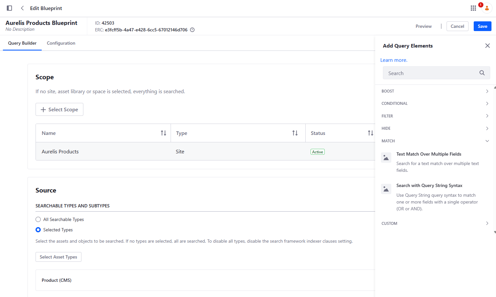
⚠️ Your structure may have a different name. ProductSheet is the name the agent picked in our run of Exercise 3.1. That exercise didn't impose a structure: the agent inferred each one from the documents in this workspace, so its name (and its fields) can differ in your project. Use whatever product structure your Product Content Space actually holds, as shown in the CMS admin (Exercise 3.2).
- Build the Search Worker agent. Agent Builder → Liferay Search agent, and
use the Duplicate action:
- Description: "Retrieval worker for Aurelis product knowledge — solar, GridMax, EV charging, Pulse, energy transformation programs. The request sent to this agent is used directly as the search query. Formulate a short, precise keyword query before invoking — never the visitor's original question verbatim. Prefer product names/codes over prose."
- Input Variables:
request. - Output Variables:
response(only the first output variable is ever used — never list more than one). - Enable the agent and hit Save before editing the workflow.
📸 Screenshot: the product search worker.
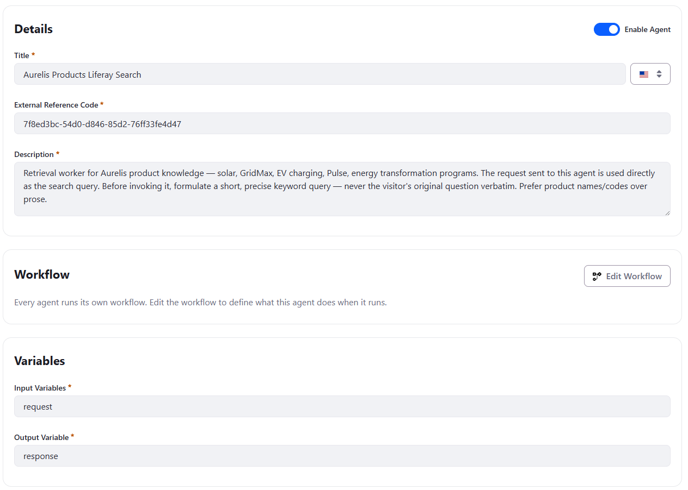
-
Edit its workflow:
Start → Liferay Search → Endand edit the Liferay Search node's configuration:- Prompt: "Analyze the retrieved product content and return factual evidence relevant to the request. Use only the retrieved information. Return concise findings; do not produce the final answer — your response is evidence for another agent."
- Input Variables:
[{"name": "request", "type": "string"}]. - Output Variables:
[{"name": "response", "type": "string"}]. - User Message:
{{request}}. - RAG config:
{"contentRetriever": {"key": "liferay", "blueprintExternalReferenceCode": "<Blueprint ERC>"}}. - Tools:
[].
📸 Screenshot: the product search worker workflow.
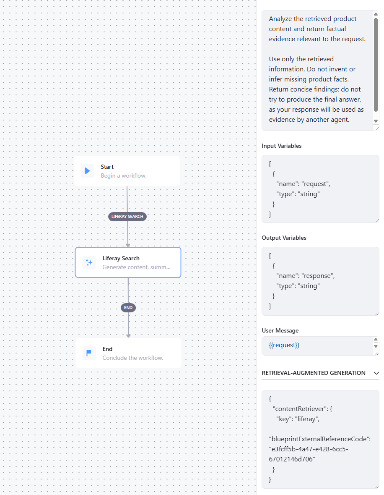
- Build the Answer Builder agent. A second, separate agent.
- Description: always invoked last, after research is complete, with the original request plus everything gathered — never for retrieval.
- Input Variables:
originalRequest,gatheredInformation. - Output Variable:
response. Enable it.
📸 Screenshot: the answer builder agent.
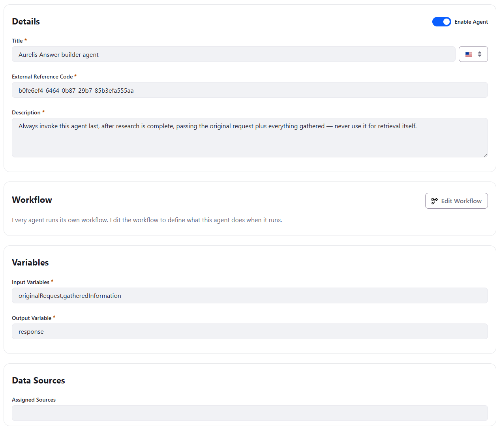
- Edit its workflow:
Start → LLM → End— no Liferay Search node.- Prompt:
Build a clear, direct answer from the gathered information alone; never invent unsupported facts; say explicitly when the evidence doesn't cover part of the question rather than guessing. Make synthetic responses, ask the user if he wants more details. - Input Variables:
[{"name": "originalRequest", "type": "string"}, {"name": "gatheredInformation", "type": "string"}]. - Output Variables:
[{"name": "response", "type": "string"}]. - User Message:
Original user request:\n{{originalRequest}}\n\nGathered information:\n{{gatheredInformation}}. - RAG config:
[]. - Tools:
[].
- Prompt:
📸 Screenshot: the answer builder agent workflow.
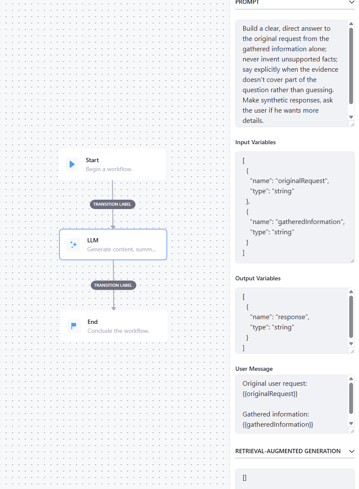
- Create the Chatbot. AI Hub → Chatbots → New Chatbot.
Assigned Agents: attach both the Search Worker and the Answer Builder. Set an Intro Message. Save.
📸 Screenshot: Aurelis RAG chatbot.
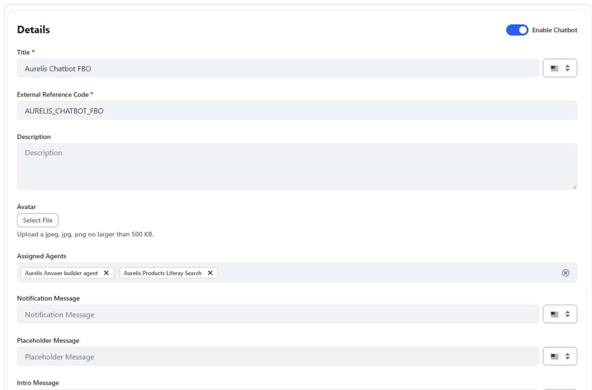
- Put the chatbot on the site with Click to Chat. Click to Chat is Liferay's native chat integration, and AI Hub is one of its supported providers. It attaches one chatbot per site, shown on every page of that site, with no fragment to build or place. It's configured in two places:
a. Enable it for the instance. Control Panel → Instance Settings → Click to Chat: - Turn Enable Click to Chat on. - Site Settings Strategy: Inherit or Override, so that each site can declare its own chatbot. - Leave Chat Provider and Chat Provider Account ID empty: the chatbot is set per site, below. - Save.
📸 Screenshot: Click to Chat enabled at the instance level.
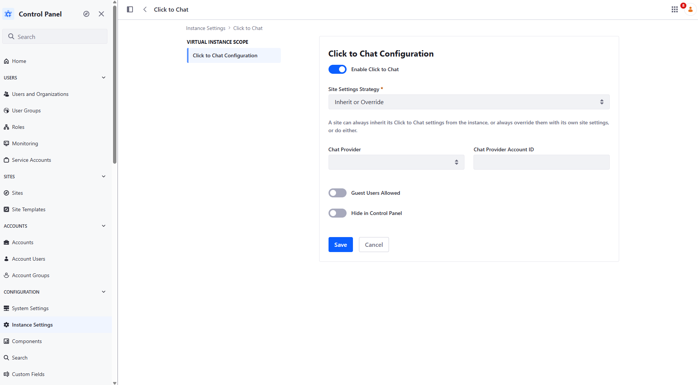
b. Attach the chatbot to the Aurelis site. Site Menu → Configuration → Site Settings → Click to Chat:
- Turn Enable Click to Chat on.
- Chat Provider: AI Hub.
- Chat Provider Account ID: your chatbot's External Reference Code (AI Hub → Chatbots → the chatbot from step 7), for example BASIC_CHATBOT_FBO.
- Turn Guest Users Allowed on: this is a public chatbot, and the verification below runs logged out.
- Hide in Control Panel: your choice. On, the chat bubble stays off the admin screens and only shows on the site's pages.
- Save.
📸 Screenshot: the Aurelis site's Click to Chat settings, with AI Hub and your chatbot's ERC.
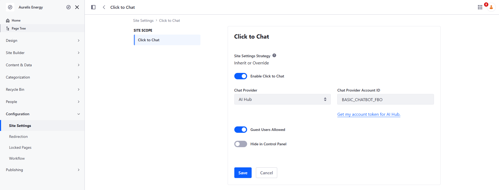
Reload any page of the site: the chat bubble appears on all of them.
⚠️ One chatbot per site. Click to Chat can't put one chatbot on some pages and a different one on others. If you need that, use the alternative below.
💡 Alternative — embed the snippet in a fragment. Once the Chatbot has an Agent assigned, its config screen in AI Hub also exposes a ready-to-use HTML/JS snippet. Copy it into a new Fragment (Design → Fragments → new Fragment in a Fragment Set → paste into the HTML/JavaScript editors), drag that Fragment onto the page you want, and publish. This places the chatbot page by page, but every page needs its own placement. Don't combine it with Click to Chat on the same site, or visitors get two chat bubbles.
✅ Verify — from an incognito/logged-out session, ask these against the live chatbot:
- "What is Aurelis GridMax and what does it do?" — grounded
- "What does the Solar Energy product line cover?" — grounded
- "If I'm interested in combining solar panels with EV charging, what would Aurelis offer me?" — needs real synthesis across two product sheets
- "What's the guaranteed response time for a Critical severity support issue for Aurelis GridMax?" — negative-proof: that commitment lives in the Customer Support & SLA Handbook, in the Customer Documentation Space, not Product Content; the bot should say it doesn't know, not fabricate a number.
While you ask, watch the ngrok inspector at http://localhost:4040 (Exercise 0.2): each question should show AI Hub's Liferay Search node calling your DXP, with a 200. No request at all means the agent never reached DXP (check the Blueprint ERC in the RAG config and the AI Hub connection); a 401/403 means it reached DXP and was rejected.
7.3 — Extend the Energy Advisor with per-account confidential facts
🎯 Extend the 7.2 chatbot to answer per-account confidential facts via a direct API call, verified so one account never sees another's data.
🧩 manage-objects (AccountRolloutDetail), manage-ai-hub 🆕 (the HTTP Request agent and the OAuth2 scope grant are still done by hand in AI Hub's/DXP's console; the skill tells you what to set and verifies it).
📖 The Energy Advisor from 7.2 only knows the public product sheets. Aurelis's customers, companies such as Novacorp or Solstice Manufacturing, also want to ask it about their own deal: what is being installed, on what schedule, under which negotiated terms, and who their account manager is. That information is confidential to each customer. In this exercise you store it per Account and let the chatbot fetch it, so that a signed-in user only ever gets their own company's answers.
📋 1. Data setup.
💬 Prompt:
Using manage-objects, create the AccountRolloutDetail Custom Object, related
oneToMany from Account (name the relationship accountToRolloutDetails).
Fields: installationScope (Text), phasedSchedule (Text), negotiatedTerms
(Text), accountManagerName (Text).
Enable Account Restriction on this object definition, with the Account
Restricted Field set to the relationship to Account. This is what makes
GET /o/c/accountrolloutdetails return only the entries belonging to the
caller's own account instead of every account's data — without it, REQ-35
(one account must never see another's data) is not actually enforced,
whatever the HTTP Request node's URL/filter looks like.
Then, using the Liferay MCP server, read
context-source/historical-rollout-data.csv and import each row as a real
AccountRolloutDetail entry, resolving the matching Account by company name
yourself.
Finally, create two test users so the verification below has someone real to
log in as: Sophie Martin (sophie.martin@novacorp.example), associated to the
Novacorp Account, and Marcus Webb (marcus.webb@solsticemanufacturing.example),
associated to the Solstice Manufacturing Account. Each must be a genuine
member of their own account and nothing else — this is what Account
Restriction actually filters on, so a user who isn't a real account member
won't resolve to any rollout data at all, restricted or not.
Access expectations: Account Restriction only filters results, it grants
nothing. Make sure members of an account actually hold VIEW on their own
account's AccountRolloutDetail entries, and tell me which role carries that
grant. Grant Guest nothing on this object, and give no company-wide VIEW
that would bypass the restriction. Both users must be active and able to
sign in. Verify as each of them: Sophie gets only Novacorp's entry, Marcus
only Solstice's, and an anonymous request gets nothing.
⚠️ Account Restriction is what keeps one customer from seeing another's data — not the HTTP Request node's URL. The bare GET /o/c/accountrolloutdetails in step 2 below has no per-account filter of any kind; it relies entirely on the object itself narrowing the result set to the caller's own account. Skip this toggle and every account sees every other account's rollout data through the exact same call — a gap that a quick admin-user test won't reveal, since an admin isn't restricted to any one account in the first place. This is also why the ✅ verification below insists on testing as a real, non-admin account user, never as admin.
📋 2–7. Build and wire the HTTP Request agent (AI Hub console):
- Agent Builder → New Agent → Edit Workflow:
Start → HTTP Request → LLM → End.
📸 Screenshot: the account info agent.
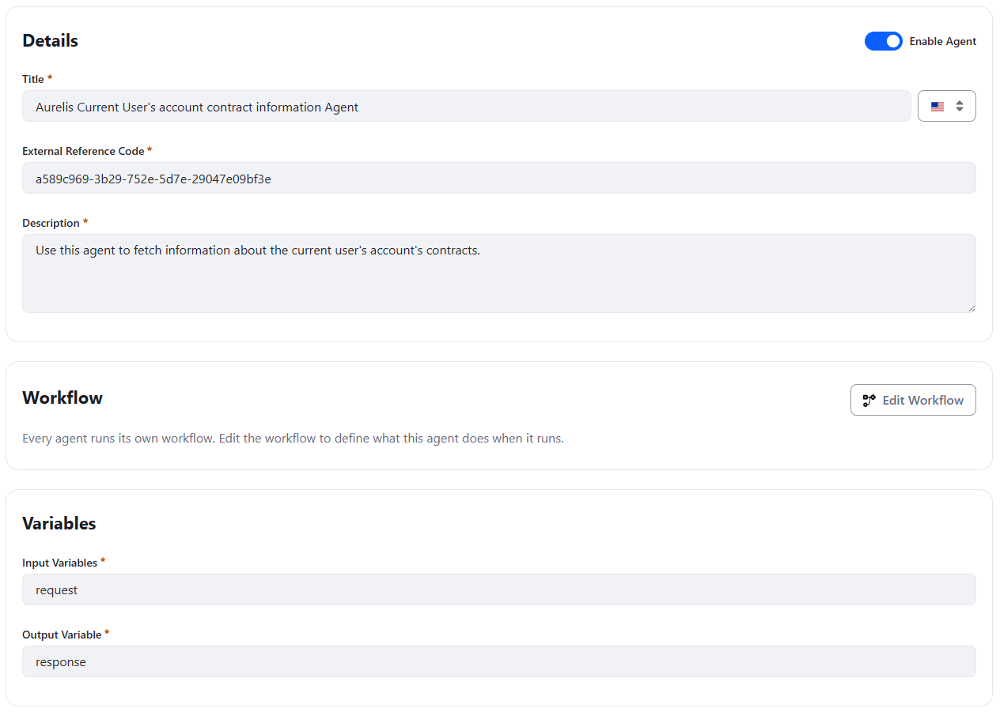
- HTTP Request node:
- Method:
GET - URL:
{{aiHubCellLiferayDXPURL}}/o/c/accountrolloutdetails - Request body: empty
- Input Variables:
[{"name": "aiHubCellLiferayDXPURL", "type": "string"}]. - Output Variables:
[{"name": "rolloutDetails", "type": "string"}]. - No custom-header field exists — a Bearer token is attached automatically from the AI Hub↔DXP OAuth2 connection.
📸 Screenshot: the account info agent workflow: HTTP Request node.
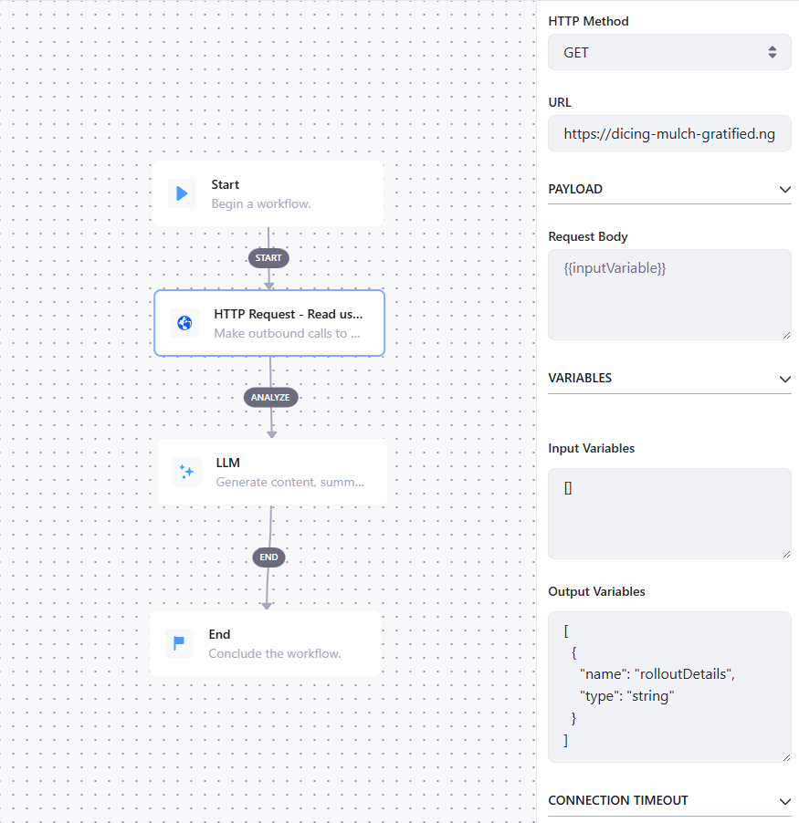
Note: aiHubCellLiferayDXPURL is a context variable you can inject which contains the URL of your Liferay DXP environment.
- LLM node:
- Prompt:
You are an agent in charge of responsing to a request about a user's contracts, using your contract knowledge. - Input Variables:
[{"name": "request", "type": "string"}, {"name": "rolloutDetails", "type": "string"}] - Output Variables:
[{"name": "response", "type": "string"}] - User Message:
Here is the account's own rollout data: {{rolloutDetails}}; answer only from what's present, say explicitly when it doesn't cover the question. - RAG config:
[]. - Tools:
[].
📸 Screenshot: the account info agent workflow: LLM node.
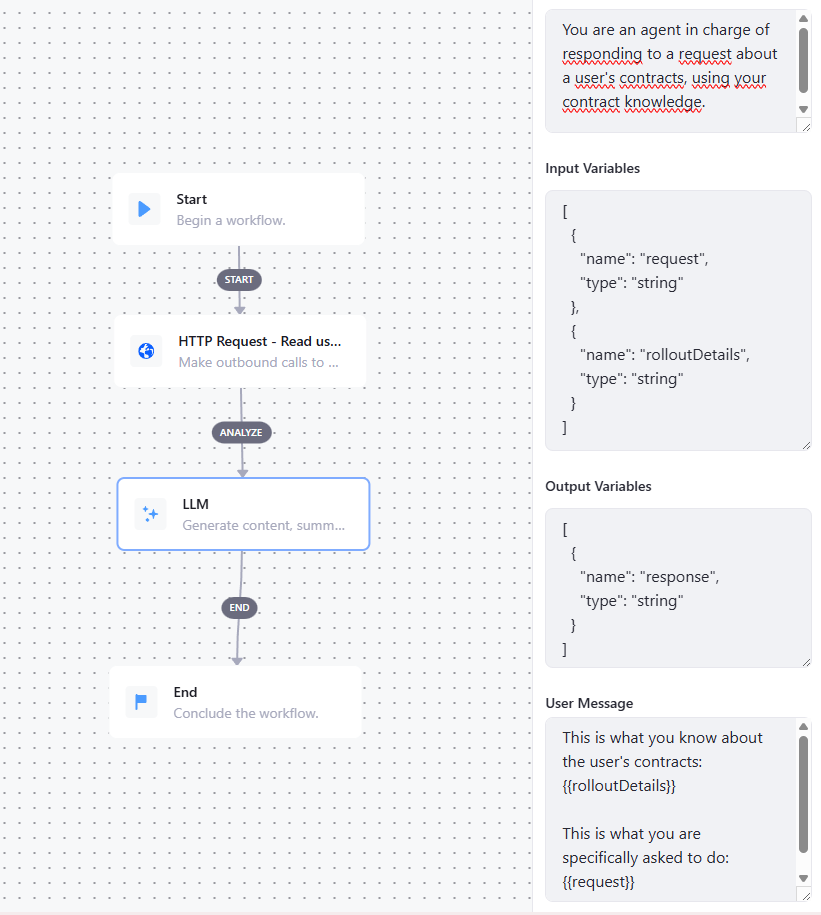
-
Add this agent to the chatbot we have created earlier.
-
Interact with the chatbot, expect a failure. If you monitor ngrok at http://localhost:4040, you'll witness
403response. It's not a bug: it proves the call reached DXP and was correctly rejected. -
Now grant the scope. Control Panel → OAuth 2 Administration → the AI Hub Cell application → Scopes → add
c_accountrolloutdetail.everything.read. Save, then log out and back in so a fresh token picks up the new scope.
📸 Screenshot: the HTTP Request node's configuration panel, and the OAuth2 Scopes tab with the new scope granted.
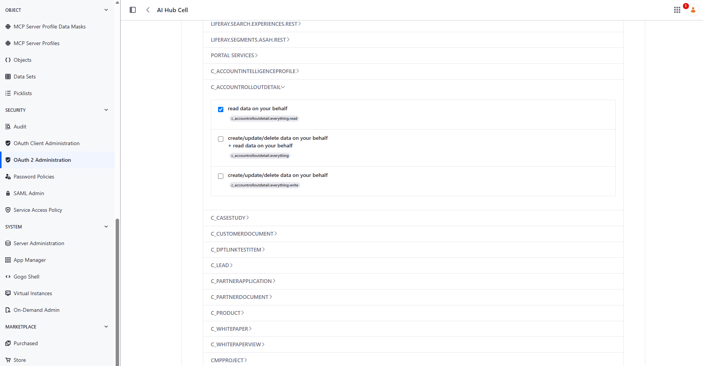
- Test again, end to end. Compare with an end user belonging to one of the following accounts (or not). In the ngrok inspector, each question now shows a
GET /o/c/accountrolloutdetailsanswering200instead of403.
📋 Test data:
| Account | Confidential data |
|---|---|
| Novacorp | 42 sites, three-phase schedule, €8.2M, Camille Laurent |
| Solstice Manufacturing | 180 panels + 12 chargers, two-phase schedule, 4-hour SLA, Diego Fernandes |
✅ Verify — logged in as each real test account, never admin:
- Sophie Martin (Novacorp): "How many sites are in the current rollout phase?" / "What price did we negotiate?" — both grounded correctly.
- Sophie Martin, negative-proof: "What's Solstice Manufacturing's SLA response time?" — must return nothing sourced from Solstice's data.
- Marcus Webb (Solstice): the mirror pair, plus a negative-proof asking about Novacorp's contract value.
- Independently inspect the actual HTTP Request node's resolved identity/filter for each call — not just the chatbot's final answer. A coincidentally-correct answer from a wrongly-filtered request is a real failure mode worth ruling out. Do it in the ngrok inspector (http://localhost:4040): open the
GET /o/c/accountrolloutdetailsrequest for each test user's question and read its response body. Signed in as Sophie Martin, it must contain Novacorp's entry only; as Marcus Webb, Solstice's only.
Level 8 — Digital Sales Room (DSR)
8.1 — Account Intelligence → Digital Sales Room, end to end
🎯 Open the Account Intelligence page, find Aurelis' top-scoring account by its combinedOpportunityScore (loaded in Exercise 2.3, computed since Exercise 6.2) — Novacorp, at 83 (more if Leads have been linked to it) — and launch its Digital Sales Room by following Liferay's own DSR Launchpad procedure verbatim, no customization. This level assembles what Levels 2–7 already built, plus a native Liferay capability used exactly as documented — no new object, page, fragment, or Client Extension.
🧩 None — pure GUI usage, straight from the official docs.
📎 CSF-02 (account-centric Fit × Value × Intent qualification), CSF-05 (frictionless collaborative sales and partner engagement); REQ-28, REQ-29 (Digital Sales Room).
📋 Activation (one-time — per Activating Digital Sales Room):
- Marketplace Customer Dashboard → My Products → the DSR product → Download tab → download the
.lpkgpackage for this instance. - Same product → Activation tab → create and download a DSR license key (
.xml). - Deploy both files to
Liferay Home/deploy. - Restart DXP and wait for every DSR module to log
STARTED. - Global Menu → Commerce → Digital Sales Room Management
📸 Screenshot: the activated Digital Sales Room.
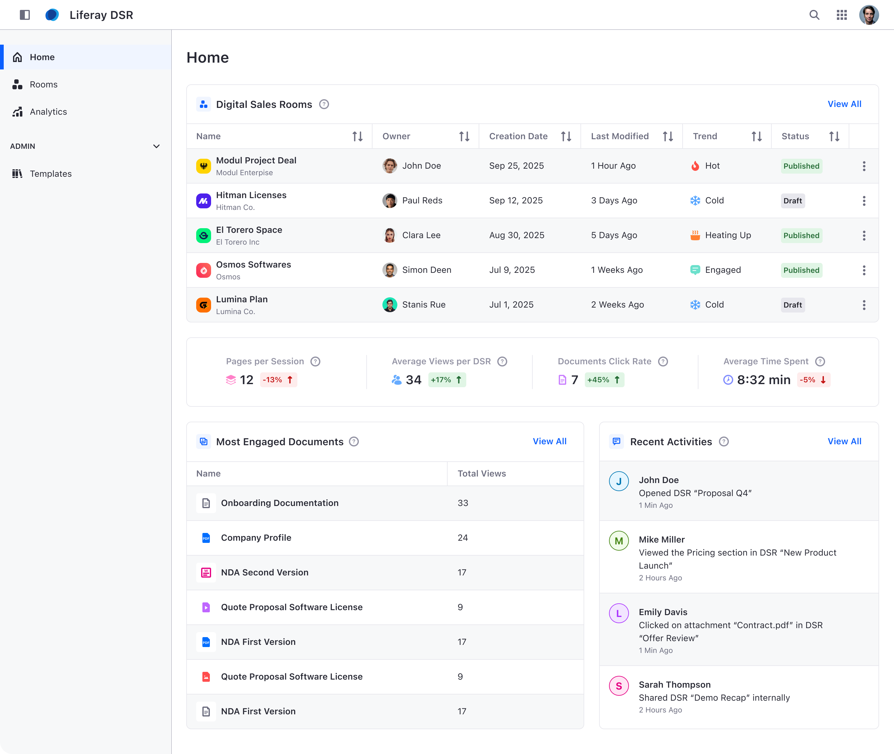
⚠️ If the DSR Management screens show a site with empty pages (no room list on Rooms, blank analytics pages), the DSR site initializer ran too early during startup: an early HTTP request (a reloading browser tab, an ngrok tunnel, a health check) triggered it before the DSR fragment renderers were registered, and the dsr-view-* fragments were silently dropped from every page. A restart does not reliably fix it. Instead, re-run the DSR site initializer on the existing site: open Control Panel → Server Administration → Script, select Groovy, paste the script below and click Execute. It updates the existing pages in place (no site deletion, no duplicates) and takes about 20 seconds. It aborts by itself if the DSR renderers are not registered yet, in which case wait for startup to finish and run it again. This is a known issue that we are fixing, so that running this script will no longer be necessary.
import com.liferay.fragment.renderer.FragmentRendererRegistry
import com.liferay.portal.kernel.change.tracking.CTCollectionThreadLocal
import com.liferay.portal.kernel.module.util.SystemBundleUtil
import com.liferay.portal.kernel.service.GroupLocalServiceUtil
import com.liferay.portal.kernel.service.ServiceContext
import com.liferay.portal.kernel.service.ServiceContextThreadLocal
import com.liferay.portal.kernel.util.PortalUtil
def bundleContext = SystemBundleUtil.getBundleContext()
def registry = bundleContext.getService(
bundleContext.getServiceReference(FragmentRendererRegistry.class))
if (registry.getFragmentRenderer("dsr-view-rooms") == null) {
out.println("dsr-view-rooms is not registered yet. Aborting.")
return
}
def group = GroupLocalServiceUtil.getGroup(PortalUtil.getDefaultCompanyId(), "DSR")
def references = bundleContext.getServiceReferences(
"com.liferay.site.initializer.SiteInitializer",
"(site.initializer.key=com.liferay.site.initializer.dsr)")
def siteInitializer = bundleContext.getService(references[0])
def safeCloseable = CTCollectionThreadLocal.setProductionModeWithSafeCloseable()
ServiceContextThreadLocal.pushServiceContext(new ServiceContext())
try {
siteInitializer.initialize(group.getGroupId())
out.println("DSR site reinitialized: group " + group.getGroupId())
}
finally {
ServiceContextThreadLocal.popServiceContext()
safeCloseable.close()
}
The output should read DSR site reinitialized: group <id>. Reload Digital Sales Room Management: the pages now render. Root cause, log timeline and the fallback fix are in troubleshooting/DSR_ACTIVATION_TROUBLESHOOTING.md §3.3.
📋 Creating Novacorp's room (per the DSR Launchpad doc):
- Global Menu → Commerce → Digital Sales Room Management → Rooms → New Digital Sales Room.
📸 Screenshot: click New Digital Sales Room to create a dedicated space.
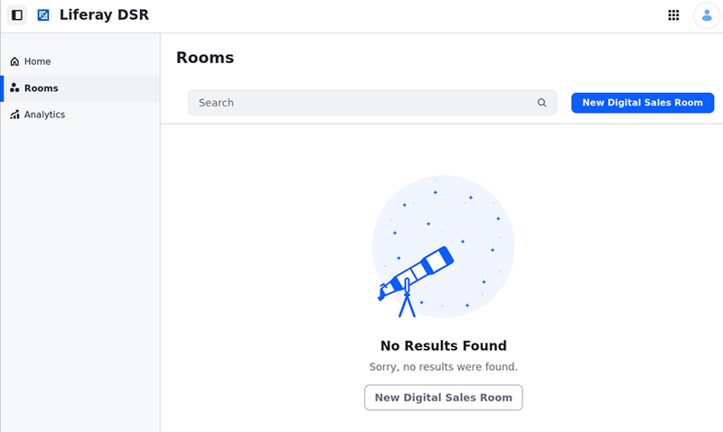
- Select Novacorp as the associated Account → Next. The account you pick here decides which team members and contacts can be invited into the room — Novacorp's own account manager, Camille Laurent (Exercise 7.3's rollout data), is who actually needs to live inside this one.
📸 Screenshot: select the account you want to associate with the room.
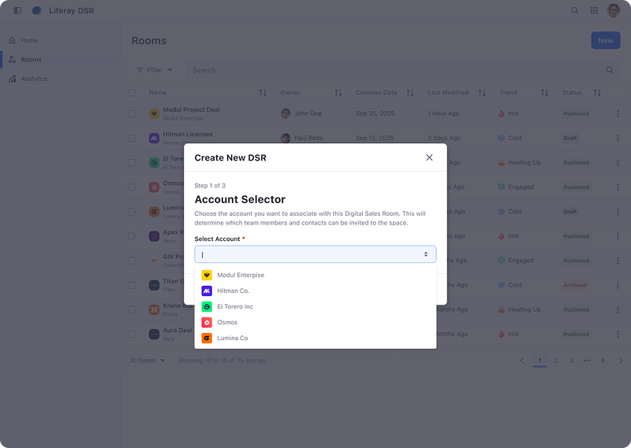
- Select a pre-configured template → Next.
📸 Screenshot: select a template to get started.
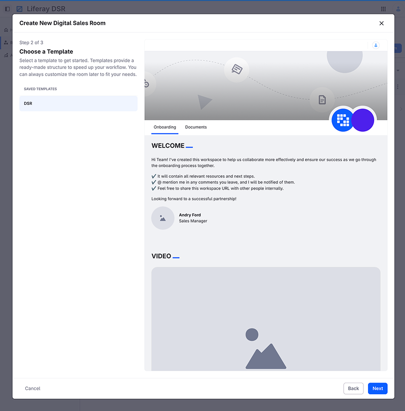
- Name it (e.g. "Novacorp — Solar + GridMax Rollout"), optionally set a Friendly URL → Save.
📸 Screenshot: enter a name and a Friendly URL for the room.
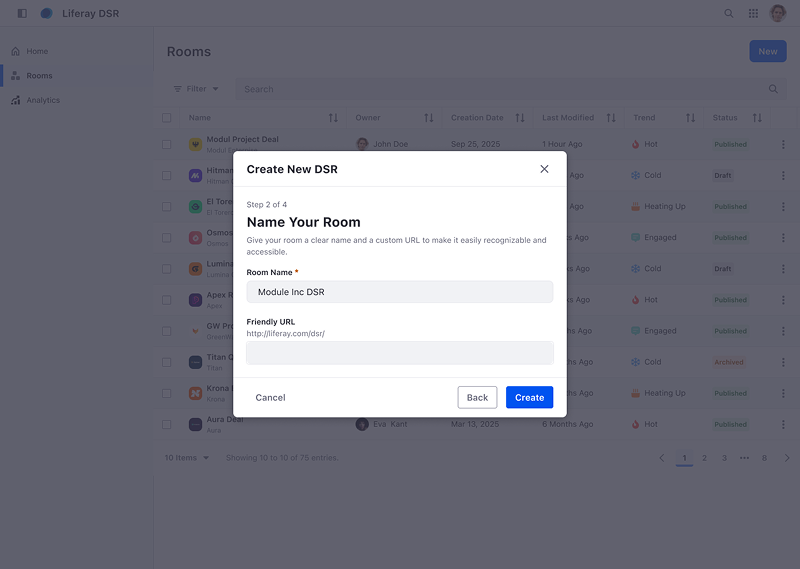
- To reopen it later: Commerce → Digital Sales Room Management → Rooms → select it from the list. Once built out, it's a publishable workspace with Novacorp's own rollout content organized across tabs (Onboarding, Documents, ...).
📸 Screenshot: the provisioned room, once populated with content.
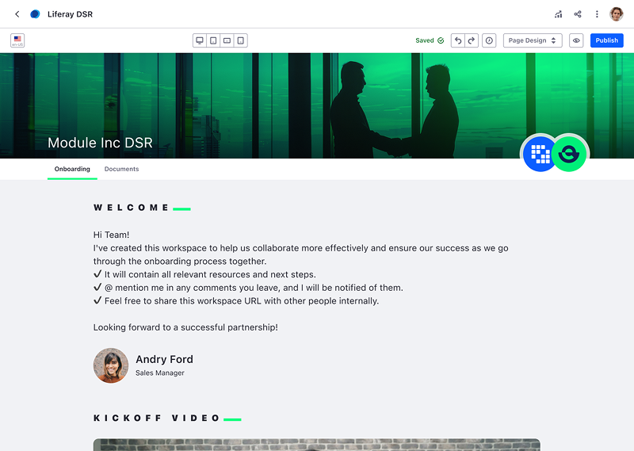
- Invite the customer. From the room, invite Sophie Martin (the Novacorp user created in Exercise 7.3) as a participant. Without an invitation, the verification below has no one to log in as: being a member of the Novacorp Account doesn't give access to the room by itself.
✅ Verify: open the newly-created room as a different, non-admin user tied to Novacorp (Sophie Martin, or an invited stakeholder) and confirm they can see the room and its shared documents. The admin-created flow proves provisioning works — this second check is what proves the actual salesperson-to-customer journey works.
Level 9 — From native to custom: a hand-built chatbot widget (Client Extensions, AI Hub, Segments, LDP)
Exercises 7.2–7.3 already stood up a properly scoped chatbot. This level shows what a custom-built widget can layer on top that the native Click to Chat can't: real-time Segment context, and a conversational buying-interest signal.
9.1 — Custom widget with real-time segment context
🎯 A self-mounting chat-bubble Client Extension that calls AI Hub's own chatbot REST API directly, and injects the fact that a visitor already read a specific white paper.
🧩 scaffold-client-extension (self-mounting customElement variant), react-custom-elements, manage-ai-hub 🆕, manage-analytics 🆕
📖 You replace the native Click to Chat bubble with your own chat bubble, which still talks to the same AI Hub chatbot. Building it yourself gives you two things the native integration can't: the chatbot knows what the visitor has already done on the site (here, that they read a given white paper) and can tailor its answers, and every exchange is tracked in Analytics, so conversations become a measurable signal of buying interest.
📋 Steps:
- Turn off Click to Chat for the Aurelis site. Site Menu → Configuration → Site Settings → Click to Chat → turn Enable Click to Chat off → Save. Otherwise every page shows two chat bubbles, the native one from Exercise 7.2 and yours. If you used the fragment alternative in 7.2 instead, remove that fragment from its page. The chatbot itself stays as it is in AI Hub: your widget talks to the same one.
- Note your chatbot's own ERC. In AI Hub → Chatbots → the chatbot you built in Exercise 7.2, find its External Reference Code. It's the value you entered as the Chat Provider Account ID in Click to Chat (Exercise 7.2, step 8). Write it down — the widget below talks to the chatbot's own API directly, so every call it makes (config fetch, chat subscribe, send message) needs to be pointed at this exact chatbot, not left for the agent to guess or invent.
- Create a real-time Segment. In Liferay Data Platform's Segments admin, create a Member Segment matching visitors who went through the Exercise 4.1 funnel. Give it a Title/Description, then open the Segment's own External Reference Code field and edit it to something you'll actually recognize — e.g.
whitepaper-readers-abcwith your own initials — instead of keeping the auto-generated one. The ERC field only accepts lowercase letters and hyphens, no uppercase or underscores. This workspace is shared, so a random auto-generated ERC is easy to lose track of or mix up with another participant's; write down the value you chose, you'll need it below.
📸 Screenshot: the Segment's detail screen showing its (renamed) ERC.
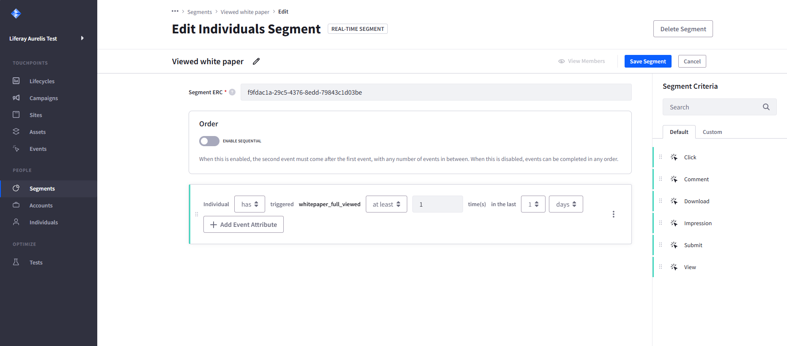
- Build the widget. A singleton, self-mounting
customElementClient Extension (chat-bubble style) replicating the native chatbot's own API calls (config fetch,chats/subscribeSSE,POST .../messages— permanage-ai-hub) instead of using the native Click to Chat. Implement the "Cell" on-behalf-of authorization layer on the message POST from the start — it's feature-detected, not optional in effect: skipping it sends every message anonymously, and if the chatbot's Search Blueprint retrieves from content Guest can't view, retrieval silently returns nothing while looking identical to "the widget is broken." - Attach segment context. Client-side, call
Analytics.segment.getRealTimeSegmentExternalReferenceCodes()— it returns a Promise resolving to an array of the visitor's current real-time Segment ERCs. Hard-code a map from the real ERC from step 2 to a description ("has already read Aurelis' Solar + Battery Microgrid white paper"). When the visitor's ERC matches, send that description with every message to AI Hub, in the message'scontextobject under the keyvisitorContext(an empty string when no segment matches), never inside the message text. - Track every response. A real captured stream shows more than the two named events documented in
manage-ai-hub— it's also full of: heartbeatcomment lines and several intermediateevent: <nodeName>messages per turn as the agent's internal workflow runs (e.g.event: liferaySearch, or an event literally named after a node's own UUID), each carrying a partial/duplicate{"nodeName", "data", "type"}payload. None of those is the final answer — only wireAnalytics.track()to the stream's terminal event for that turn:Chat Message Sent(success — the only one carryingagentDefinitionExternalReferenceCodes) orAgent Invocation Failed/a connectionerror(failure). Firing on every named event instead would record several duplicate "success" events for one actual reply. Sanitize whatever you pass asAnalytics.track()'s second argument — it only accepts strings/numbers/booleans capped at 1024 characters; forwarding a raw array (e.g.agentDefinitionExternalReferenceCodes) or an over-length string throws an uncaught exception straight out of the SDK.
💬 Prompt (substitute your own Chatbot ERC from step 1 and Segment ERC from step 2):
Build a self-mounting, singleton customElement Client Extension (chat-bubble style) that talks directly to AI Hub's own chatbot REST API — config fetch,
chats/subscribe SSE stream, POST .../messages — using the confirmed pattern
in the manage-ai-hub skill, instead of Liferay's native Click to Chat
integration (it is turned off for this site). My chatbot's own External Reference Code is
"<your Chatbot's real ERC>" — use it for every one of these calls, don't
invent or guess a different one.
Implement the "Cell" on-behalf-of authorization layer (postAuthorizationToken
in the confirmed pattern) and attach its headers to at least the message POST
from the start, not as an afterthought — it's feature-detected, not skippable
in effect: an anonymous message POST against a permission-scoped Search
Blueprint silently retrieves nothing, which looks identical to "the widget is
broken" with no error anywhere.
Client-side, call Analytics.segment.getRealTimeSegmentExternalReferenceCodes()
— it returns a Promise resolving to an array of the visitor's current
real-time Segment ERCs — and check the result against this hard-coded map:
{"<your Segment's real ERC>": "has already read Aurelis' Solar + Battery
Microgrid white paper"}
On every message POSTed to AI Hub, send the matching description in the
message's context object under the key visitorContext, e.g.
"context": {"visitorContext": "has already read Aurelis' Solar + Battery
Microgrid white paper"}, or an empty string when no segment matches. Never
append it to the message text: the context keys bypass the chatbot's
Supervisor and reach the agent's workflow directly.
The SSE stream fires several intermediate "event: <nodeName>" messages per
turn before the real answer (e.g. "event: liferaySearch", or an event named
after a workflow node's own UUID), plus ": heartbeat" comment lines — ignore
all of those for tracking purposes. Only fire Analytics.track() on the
stream's terminal event for that turn: one custom event (e.g.
chatbotResponseReceived) carrying real metadata from the SSE payload (e.g.
agentDefinitionExternalReferenceCodes) when the terminal event is "Chat
Message Sent", and a distinct custom event (e.g. chatbotResponseError) when
it's "Agent Invocation Failed" — or a generic connection error — instead.
Never fire the success event for a manifest chatbot error, and never fire
more than one tracked event for a single reply. Analytics.track() only
accepts string/number/boolean property values capped at 1024 characters, so
sanitize anything forwarded from the SSE payload first (join an array like
agentDefinitionExternalReferenceCodes into a string, stringify any object,
truncate long strings) — passing a raw array or an over-length string
straight through throws an uncaught exception from inside the SDK.
📋 Then, in AI Hub's console (GUI edit, not a prompt): update the Answer Builder agent from 7.2 so it reads the new visitorContext key. Everything changes on its LLM node, nothing on the agent definition:
- Leave the agent definition's Input Variables as they are (
originalRequest,gatheredInformation). Do not addvisitorContextthere: the Supervisor fills those variables, it never sees thecontextkeys, and it would overwrite the real value with an empty string. -
Agent Builder → the Answer Builder agent → Edit Workflow → select the LLM node:
- Input Variables: add
visitorContext:[{"name": "originalRequest", "type": "string"}, {"name": "gatheredInformation", "type": "string"}, {"name": "visitorContext", "type": "string"}]. - User Message: inject it:
Original user request:\n{{originalRequest}}\n\nGathered information:\n{{gatheredInformation}}\n\nWhat we know about this visitor:\n{{visitorContext}}.
- Input Variables: add
-
In the same node, extend its Prompt:
The user message may include a "What we know about this visitor" section. If
it says the visitor has already read a specific Aurelis white paper, treat
that as established context: acknowledge it briefly, then build on it — move
straight to a concrete next step instead of re-explaining the basics. If that
section is empty, answer normally.
For a visitor outside the segment, visitorContext is empty and the section stays blank, so the agent answers as before.
💡 How context reaches an agent in AI Hub. A message POSTed to the chatbot API carries two things: the visitor's text, and an optional context object. They don't travel the same way:
- The text goes to the chatbot's Supervisor, which passes it to the agent it picks as
request. The Supervisor may rephrase it, and it is the only thing the Supervisor routes on. Context written into the text (for example a[CONTEXT]block in front of the question) works, but it also goes into the Supervisor's chat memory, which grows with every copy and is summarized every turn, so each turn gets slower. - The
contextkeys bypass the Supervisor: it never sees them, so it can neither reword them nor route on them. They land directly in the workflow context of whichever agent it calls, where the workflow nodes read them intact.
Two rules follow when you use context:
- Declare each key as an Input Variable on the workflow node that uses it (the LLM node), never in the agent definition's Input Variables. The agent definition's variables are the arguments the Supervisor fills in, and it only knows the visitor's text: a key also listed there gets an empty string from the Supervisor, which overwrites the real value.
- Keep the context compact. It is sent on every turn, and the agent's own LLM still reads whatever its prompt references. On a form-filling chatbot, a turn took about 40 s with 3,500 characters of page state appended to the text, and 12–17 s with nothing appended. Send only what the agent actually uses, and state fixed instructions once in the prompt rather than repeating them in every message.
This is why the exercise sends the segment description as a context key, visitorContext, declared on the Answer Builder's LLM node and injected into its User Message, rather than in the message text.
✅ Verify: place the Client Extension tag once (e.g. on the master page), load two different pages, confirm the same widget appears on both, and that it's the only chat bubble on the page (no leftover Click to Chat bubble). Have one full, successful conversation, confirm exactly one success Analytics.track() event per response with real metadata. Run the conversation twice more as two different visitors — one carrying the segment, one not — and confirm the reply visibly differs (the segment-carrying one should reference the white paper unprompted). Then force a failure (e.g. a malformed request, or momentarily disabling the assigned agent) and confirm the distinct chatbot-error event fires instead of the success one — not both, and not neither.
9.2 — Detect buying interest mid-conversation
🎯 Extend the same widget and the same agent so a conversational sign of combined-product interest becomes a trackable event, instead of evaporating at the end of the chat.
🧩 scaffold-client-extension (extending the 9.1 widget — no new Client Extension), manage-ai-hub 🆕, manage-analytics 🆕
📖 A page visit or a form submission only tells you that something happened. A conversation can tell you much more: a visitor who asks how solar panels and battery storage work together is showing real interest in a combined offer. Here you ask the agent to flag that moment discreetly in its reply, and the widget turns it into an Analytics event naming the products involved, which marketing and sales can then act on.
📋 1. AI Hub console — extend the same agent's prompt again:
Answer the visitor normally first. Separately, if — and only if — the
conversation shows the visitor is specifically interested in combining two
or more Aurelis product lines (for example solar panels with battery
storage), append this exact block on its own line at the very end of your
reply, after the conversational answer, with the actual product lines
substituted in:
[[INTEREST:{"products":["Solar","GridMax"]}]]
Only include this block when genuine combined-product interest is clearly
expressed. Never mention this block to the visitor, never explain what it's
for.
💬 2. Widget change — prompt for your coding agent. Unlike step 1, this one is not typed into AI Hub. Give it to Claude Code (or whichever coding agent you use) in this workspace: it updates the code of the custom chat-bubble Client Extension you built in 9.1, so the widget recognizes the marker the agent now adds, hides it from the visitor and turns it into an Analytics event.
Extend the chat-bubble customElement Client Extension built earlier
so it also recognizes a [[INTEREST:{...}]] marker anywhere in an assistant
response:
strip that marker, and the line it's on, from the text before rendering the
reply to the visitor, parse the JSON it contains, and fire a second, distinct
Analytics.track() call carrying that parsed payload — separate from the
per-response tracking call already in place. If no marker is present, render
the reply exactly as before.
✅ Verify: ask about one product line alone — no interest event fires, no stray marker text visible. Ask about combining two product lines — confirm the visitor-facing reply has no trace of the marker syntax, exactly one additional Analytics.track() event fires with the correct product list (check the browser's devtools directly), and that event actually shows up in Liferay Data Platform, not just the outgoing request.
Appendix — Full screenshot checklist
Use this as a shot list if you're preparing a recorded walkthrough or a written report of this tutorial.
| # | Exercise | Screenshot |
|---|---|---|
| 1 | 0.2 | Portal loading through the ngrok HTTPS URL |
| 2 | 1.2 | Feature Flags panel with the three flags enabled |
| 3 | 1.4 | Instance Configuration → General with a unique name and Aurelis as home/landing/logout page |
| 4 | 2.1 | Account object definition's field list with the new custom fields |
| 5 | 3.2 | Version history / Restore Version screen |
| 6 | 3.2 | Translate screen mid-edit |
| 7 | 3.2 | Basic Document detail panel vs. a plain entry's detail panel |
| 8 | 3.3 | AI Hub Configurations screen + DXP AI Hub connection screen |
| 9 | 3.3 | CKEditor5 AI menu open, and a before/after rewrite |
| 10 | 3.4 | CMP campaign board with both tasks assigned |
| 11 | 4.1 | Listing page → gated entry → full write-up → LDP event |
| 12 | 4.2 | Saved Event Analysis config; downloaded Event Analysis Report with a real row |
| 13 | 4.3 | The live sorted page; Page Editor showing the Data Set already selected (wired from the site initializer) |
| 14 | 4.4 | Account-detail app in edit mode, before/after save |
| 15 | 5.1 | Partner form after a successful company-registry lookup |
| 16 | 6.1 | Input widget with a drawn profile; results chart for two months |
| 17 | 7.1 | Role × content access matrix |
| 18 | 7.2 | Search Blueprint config; Agent Builder workflow canvas; Chatbot Assigned Agents screen |
| 19 | 7.2 | Click to Chat enabled in Instance Settings; the site's Click to Chat settings with AI Hub and the chatbot ERC; live chat bubble on the site |
| 20 | 7.3 | HTTP Request node config; OAuth2 Scopes tab with the granted scope |
| 21 | 8.1 | DSR activated; New Digital Sales Room; account selection; template selection; naming; provisioned room workspace |
| 22 | 9.1 | Segment detail screen with its ERC; chat bubble on two pages; two differing replies |
Going further — AI Hub quick starts
To learn more about AI Hub, and how to use it on concrete use cases, see the AI Hub quick starts: https://github.com/fabian-bouche-liferay/ai-hub-quick-start. Each quick start is a step-by-step guide built around one real scenario, and they go beyond what this workbook covers.